Nonspecific Cellular Interactions Are a Key Determinant in the Disposition of Fc-Fused Proteins
As the diversity of therapeutic protein structures continues to evolve, it is essential to understand the mechanisms that determine their pharmacokinetic properties. The current work was initiated to establish the physicochemical attributes and cellular processes most crucial for the target-independent disposition of proteins possessing a fragment crystallizable (Fc) region. We systematically redesigned the surface properties of five de novo-generated protein scaffolds lacking any known binding partner in mice to produce a total of 35 Fc-fused proteins exhibiting a diverse set of physicochemical characteristics. Pharmacokinetic studies in wild-type mice revealed a profound spread in elimination rates and extensive tissue accumulation that was most strongly associated with charge descriptors. A suite of in vitro studies demonstrated that these in vivo observations significantly correlated to cellular nonspecificity wherein positive surface charge caused higher nonspecific adsorptive endocytosis, diminished recycling efficiency by the neonatal Fc receptor, and net cellular accumulation. Combined, our results provide a detailed explanation for how the disposition of Fc-fused proteins is impacted by charge, which will aid protein engineering efforts aimed at optimizing pharmacokinetic features.
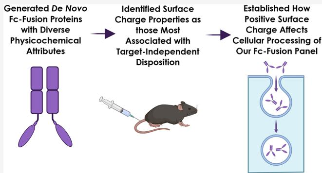
INTRODUCTION
The biopharmaceutical industry has been building off the success of IgG-based monoclonal antibodies (mAbs) by developing an ever-increasing range of antibody-based protein modalities to unlock innovative therapeutic strategies. 123456 This growth has even progressed to encompass significant advancements in computationally derived miniproteins aimed at novel approaches for target engagement. 789 However, the evolution of new molecular formats to attain effective pharmacology must be properly counterbalanced with their developability to successfully generate a marketed drug product. 1011121314151617181920 A key focus within drug discovery and optimization is obtaining favorable dispositional properties of distribution, metabolism, and elimination that are mathematically described via pharmacokinetic (PK) parameters. These are critical to ensure high enough drug exposure over time to accomplish clinical efficacy. Thus, a deep understanding of the determinants of therapeutic protein disposition is necessary to guide engineering strategies aimed at design and remediation of preclinical candidates. 2122
One of the many reasons why mAbs are such effective therapeutics is that they have lower target-independent elimination rates than similarly sized proteins. 2324 The fragment crystallizable (Fc) region, which facilitates the pH-dependent interaction with the functioning complex of the neonatal Fc receptor (FcRn, FCGRT) and its noncovalent partner \(\beta 2\) -microglobulin (B2M), is primarily responsible for this long half-life. One of the main fates of nonspecifically internalized proteins is lysosomal catabolism. 252627 However, a mAb endocytosed in this manner can encounter FcRn in vesicular compartments, where FcRn will bind to the Fc domain with high affinity at acidic pH values that occur during endosomal trafficking. 282930313233343536 FcRn can then actively recycle or transcytose the mAb by releasing it at the cell surface due to the very low affinity at near-neutral pH. Exploiting this pathway to decrease non-target elimination is therefore a major reason to incorporate an Fc-domain within a therapeutic protein or peptide.373839
Preclinical and clinical mAbs can display broad nontarget dispositional characteristics, such as an extensive range of target-independent clearance \(\mathrm{(CL_{ind})}\) values that cannot be simply explained by variance in FcRn binding parameters.404142434445464748495051 Numerous investigations have set out to understand the physicochemical factors responsible for variable target independent disposition between mAbs.5253545556575859606162636465666768697071727374757677 One attribute found to be important is charge, which has been associated with elimination and distribution abnormalities. Therapeutic mAbs with high overall negative or positive charge may exhibit faster \(\mathrm{CL}_{\mathrm{ind}}\) and more extensive nontarget tissue accumulation.78798081828384858687888990919293949596979899100101102103104105106107108 However, we and others have shown that protein surface charge properties that include distribution pattern and magnitude, rather than net charge itself, can alter nonspecific endocytosis (NSE), the FcRn interaction, and general cellular nonspecificity to significantly impact the \(\mathrm{CL}_{\mathrm{ind}}\) of mAbs.109110111112113114115116117118 The rate of NSE can vary dramatically between mAbs due to solvent-exposed positive charge interactions with the negatively charged plasma membrane, resulting in very high internalization even in cells without the target expressed.119 Additionally, mAb surface charge deviations can negatively affect the pH-dependent interaction with FcRn.120121122123 The net result of irregularities in either of these attributes is a reduced overall FcRn recycling efficiency that leads to increased mAb catabolism due to a higher internalized fraction undergoing lysosomal degradation.124125
These reports have deepened our understanding of how various physicochemical properties can significantly improve or impair the success of a mAb as a therapeutic candidate. However, deviations in general trends between physicochemical attributes and aberrant PK behaviors are frequently encountered. For example, attempts to use charge descriptors to explain high \(\mathrm{CL}_{\mathrm{ind}}\) and/or off-target tissue accumulation are not always successful, with multiple reports demonstrating little to no correlation.126127128129130131132133134135136137138139140 There also remains a poor definition of the exact physiological and cellular mechanisms driving the relationships between physicochemical attributes with elimination and distribution. Identifying which physicochemical properties correspond with dispositional risks and understanding the mechanistic underpinnings as to why will be crucial for continued improvements in the developability of Fc-based therapeutic proteins. Additionally, expanding PK-focused evaluations to non-mAb modalities will be imperative, especially so for de novo scaffolds where there is considerable control over amino acid composition as has been reported for several classes of minibinders.141142143 Establishing the effects on the disposition of these and other non-antibody-derived scaffolds following sequence redesign and fusion to an Fc-domain will be highly informative on defining engineering strategies aimed at optimizing PK properties.
We reasoned that a systematic study intended to examine PK attributes across a panel of stably engineered proteins with varying sizes, shapes, and physicochemical properties in the absence of endogenous antigen binding could help us better understand the major target-independent drivers of dispositional risk. Five de novo proteins with different sizes and topologies were each redesigned to generate series of variants that differed in their surface properties while preserving their folded structure. PK studies of these Fc-fused proteins revealed that surface charge was an important determinant of the overall disposition in vivo. We then performed an extensive set of in vitro experiments to establish the underlying cellular mechanisms driving these in vivo observations.
MATERIALS AND METHODS
Cell Cultures
CHO-K1 cells for NSE assays were obtained internally from Amgen and cultured in Ham’s F-12K media (no. 21127022, Thermo Fisher, Waltham, MA) supplemented with \(10\%\) heat inactivated fetal bovine serum (#16140071, Thermo). Optimal subculturing conditions for these cells were identified as 1.5 to \(2.0 \times 10^{4}\) cells per \(\mathrm{cm}^2\) every 2–3 days. Two lines of human umbilical vein endothelial cells (HUVECs) were chosen for this study. GFP-expressing (#cAP-0001GFP, Angioprotomie, Boston, MA) and wild-type HUVECs (#CC-2519, Lonza, Walkersville, MD) were both maintained in VascuLife VEGF medium (# LL-0003, Lifeline Cell Technology, Frederick, MD) until they reached \(80\%\) confluency prior to being seeded in microfluidic chips as described below. Human lung fibroblasts (#CC-2512, Lonza) were cultured in fully supplemented FibroLife media (#LL-0011, Lifeline Cell Technology) until they achieved \(80\%\) confluency. Parental and hFcRn-GFP/h \(\beta\) m MDCK-II cells were procured, generated, and grown as we have described previously. All adherent cells were cultured within a \(37^{\circ}\mathrm{C}\) incubator at \(5\%\) \(\mathrm{CO}_{2}\) . An internal Amgen CHO-K1 cell line adapted for suspension growth was routinely cultured in a medium containing \(50\%\) EX-CELL 302 Serum-Free Medium (#14324C, Sigma-Aldrich, St. Louis, MO), \(50\%\) of CHO-K1 growth medium prepared in house, and \(2\mathrm{mM}\) L-glutamine (#25030081, Gibco/Thermo Fisher). Cells were incubated in a \(37^{\circ}\mathrm{C}\) humidified shaker at \(120\mathrm{rpm}\) with \(5\%\) \(\mathrm{CO}_{2}\) and split twice a week.
Protein Design
For all designed proteins, the “Blueprint Builder” method describes the following backbone design strategy. First, the phi/ psi bins of all amino acids are specified by using the ABEGO notation. Then, Rosetta folding simulations are conducted without a sequence but constrain the phi/psi bins of the folding protein chain. Nine-amino acid fragments from the PDB are used to generate plausible stretches of phi/psi that match the desired bins for the given chunk. These fragments are inserted in a Monte Carlo fashion by using a simplified backbone-only energy function. In the final stages of refinement, the 9-amino acid fragments are replaced with 3-amino acid fragments to fine-tune the backbone geometry of the protein.
FastDesign is a Rosetta design process based on the FastRelax protocol. It involves iteratively designing the amino acid sequence at low repulsive weights, minimizing atomic positions and gradually increasing the repulsive force through four stages (2%, 25%, 55%, and 100%). The Rosetta energy function drives this process and is typically repeated 3 times for a given run.
Forward folding refers to running Rosetta folding trajectories using the fully designed sequence to sample the landscape of plausible folded models for each protein. A successful forward folding evaluation results when the lowest energy structures found in the trajectories cluster near the designed structure, with no low-energy alternatives found elsewhere.
For SUOI, the backbone was created with Blueprint Builder with hand-crafted chunks of helices and selected among multiple choices of loop phi/psi bins. The sequence was designed with FastDesign and forward folding was used for selection.144 For 2KL8, the backbone was also generated with Blueprint Builder, followed by FastDesign and forward folding for sequence and
selection. 145 For TIM, the backbone of this protein was generated with Blueprint Builder using manually specified sheet and helix lengths. Many backbones were generated, and exactly 1 was selected for sequence design. FastDesign was used as the basis with manual mutations introduced at the loops. 146 The backbone of LCB1 was generated similarly to that of 5UOI miniprotein. This backbone was then used in the Patchdock/Rifdock pipeline to generate a dock and a designed interface refined with FastDesign. 147 The backbones of the TH1 protein were generated parametrically by manually specifying the location of the helices and generating ideal helices in those locations. The loops connecting the helices were found from fragment lookup from the PDB. The sequences were designed with FastDesign. 148
Plasmids
All de novo-designed proteins were fused to the C-terminus of an effectorless human IgG1 Fc.149 DNA fragments for the gene of interest were synthesized by either IDT (Coralville, IA) or Twist Bioscience (South San Francisco, CA) and cloned into the expression vectors, which were engineered to be compatible with the piggyBac (PB) transposase system.150 All constructs were sequence-verified prior to transfection.
Mammalian Expression
CHO-K1 suspension cells were cultured in EX-CELL 302 Serum-Free Medium (Sigma) and custom-prepared CHO-K1 growth medium supplemented with \(2\mathrm{mM}\) L-glutamine (Gibco). All Fc-fusion molecules were stably expressed from CHO-K1 cells via a transpose-based technology as described previously. 151 Titers of Fc fusion proteins in the conditioned media (CM) were determined using octet quantitation assays with Protein A biosensors (catalog no. 18-0004, ForteBio) or estimated by SDS-PAGE analysis.
Recombinant Protein Purification
Proteins were captured on a mAb Select Sure column (catalog no. 11003495, Cytiva) pre-equilibrated with TBS (20 mM Tris, 150 mM NaCl, pH 7.5). After washing with TBS, bound protein was eluted with \(0.5\%\) acetic acid, 150 mM NaCl, pH 3.5 and further polished on a HiLoad Superdex 200 pg preparative SEC (cat. no. 28989336, Cytiva) with a running buffer of HBS (30 mM HEPES, 150 mM NaCl, pH 7.6). Eluted peaks were pooled, filtered through a \(0.22\mu \mathrm{m}\) Posidyne syringe filter (cat. no. 4908, Pall Corporation), and stored at \(-80^{\circ}\mathrm{C}\) . In certain cases, whereas proteins did not display a monodispersed SEC peak, 2xPBS buffer (274 mM NaCl, 5.4 mM KCl, 20 mM \(\mathrm{Na}_2\mathrm{HPO}_4\) , and 3.6 mM \(\mathrm{KH}_2\mathrm{PO}_4\) ) was used as the formulation buffer. Protein concentration measurements were performed using a Nanodrop spectrophotometer (Thermo Fisher Scientific).
Analytical SEC
Analytical SEC was performed using HPLC (Agilent 1200 series) and a Sepax Zenix-C SEC-300 \(3\mu \mathrm{m}300\times 4.6\) mm LC column (cat no. 233300-4630, Sepax) in \(100~\mathrm{mM}\) sodium phosphate and \(250~\mathrm{mMNaCl}\) , pH 6.8 with a flow rate at \(0.45~\mathrm{mL / min}\) and a run time of \(12\mathrm{min}\) .
Intact Mass Analysis Using LC-MS
Protein samples for non-reduced and reduced LC-MS analysis were prepared by combining \(5\mu \mathrm{g}\) of protein with an equal volume of \(0.1\%\) formic acid. For reduced LC-MS analysis, \(5\mu \mathrm{g}\) of protein was mixed with an equal volume of \(8\mathrm{M}\) guanidine hydrochloride. TCEP (cat no. 77720, Thermo Fisher Scientific) was added to \(16.7~\mathrm{mM}\) and the mixture was incubated at \(60^{\circ}\mathrm{C}\) for \(30\mathrm{min}\) . The sample was briefly chilled on ice and mixed with
0.1% formic acid. About \(2\mu \mathrm{g}\) of protein was injected onto the LC-MS column. The separation was conducted using a 2.1 mm \(\times 75\) mm C4 reverse phase column (Mac-mod) with a gradient of 5-95% B at a flow rate of \(0.75~\mathrm{mL / min}\) for 12 min. Solvents A and B were 0.1% formic acid in water and 0.1% formic acid in acetonitrile, respectively. All LC-MS analyses were performed on an Agilent 1200 HPLC system coupled with an Agilent 6230 TOF mass spectrometer (Agilent). The full MS scan was obtained over the \(m / z\) range of 500-3500.
Endotoxin Measurement
All purified proteins were tested for endotoxins using Endosafe LAL cartridges and nexgen-MCS (Charles River). Proteins analyzed by in vivo PK had endotoxin levels below \(0.5 \mathrm{EU/mg}\)
Microcapillary Electrophoresis (MCE)
Protein purities were characterized using a Microcapillary Electrophoresis (MCE) system (Caliper LabChip GXII, PerkinElmer). Protein express reagents (catalog no. CL5960008, PerkinElmer) and LabChip HT protein express chip (catalog no. 760499, PerkinElmer) were prepared according to manufactured protocols. Samples were mixed with nonreducing condition buffer in a 96-well PCR plate (cat. no. HSP9601, BioRad) and denatured at \(85^{\circ}\mathrm{C}\) for \(5\mathrm{min}\) . The plate was briefly spun down before loading on LabChip GXII and peak areas were integrated by using Chromeleon software (Thermo Fisher Scientific).
Protein Properties’ In Silico Calculation
All molecules possess identical modules, including the N-terminal Fc, Fc-protein linker, and C-terminal his \(_6\) -tag. Only the unique fragment, namely, the de novo protein, was subjected to attributes calculations. For a single calculation, the amino acid sequence was folded by an internally modified version of AlphaFold2 without the multiple sequence alignment step nor structure templates to generate 3-dimensional structure. All AlphaFold2 outputs were inspected, and the top pick was imported into the Molecular Operating Environment (MOE; Chemical Computing Group, Montreal, Quebec, Canada) for the remaining calculations. The imported structure was prepared through relaxation and solvation for conformational sampling. During the calculations, a 100-conformer ensemble was generated uniformly across physiological pH values (6.4-8.4) using LowModeMD. Attributes were computed and averaged across all conformers.
Pharmacokinetic Studies for Serum Concentrations
All mice were cared for in accordance with the Guide for the Care and Use of Laboratory Animals, eighth Edition at AAALAC, International accredited facilities. All mouse protocols were approved by Amgen, Inc. Institutional Animal Care and Use Committee (Thousand Oaks, CA; protocol number 2008-00092). Female wild-type C57BL/6J micewere purchased from Jackson Laboratory (Bar Harbor, MA). The proteins of interest were administered as a \(2\mathrm{mg/kg}\) intravenous bolus dose via the lateral tail vein. Due to the frequency and amount of blood sampling required over a short time span, collections were staggered across at least 2 separate groups of mice per assessed protein. Blood specimens were collected at various times post injection across the distinct animal groups, incubated at ambient temperature for approximately \(20\mathrm{min}\) or until fully clotted, and then centrifuged to separate out serum. All serum specimens were stored at \(-70^{\circ}\mathrm{C}\) ( \(\pm 10^{\circ}\mathrm{C}\) ) until used in analytical assays.
Biodistribution Studies
For biodistribution studies, the animals were injected with the proteins, as described above. Various tissues were harvested from each animal immediately following exsanguination at the indicated time points within the figures. Sampling times were chosen based on internal data for Fc-based biologics and a previous report quantifying biodistribution of a cationic IgG over a short time span.152 Tissues were rinsed with \(0.9\%\) sterile saline upon extraction, blotted with dry gauze, immediately placed into cryovials (Eppendorf Protein LoBind, catalog no. 0030108116), weighed, and submerged in liquid nitrogen to snap freeze the tissues. Once the tissues were frozen, they were stored on dry ice during necropsy procedures and at \(-70^{\circ}\mathrm{C}\) \((\pm 10^{\circ}\mathrm{C})\) for subsequent analysis. For studies with macrophage depletion, the animals were intravenously injected with \(10\mu \mathrm{L} / \mathrm{g}\) of control or clodronate liposomes (Liposoma Research, The Netherlands) 2 days prior to protein test article injection. Though we did not directly evaluate macrophage depletion efficiency in the current study, the clodronate liposome conditions were based on the manufacturer’s information, published protocols, and internal data (not shown).153
Quantitation of Fc-Fusion Protein Concentration in Mouse Serum and Tissues
Analysis of serum samples was performed using electrochemiluminescent immunoassays on the MSD Sector 600 instrument (Meso Scale Diagnostics, Rockville, MD). A biotinylated anti-HIS tag antibody (Genscript) was coated onto Streptavidin SECTOR plates as the capture reagent. The standards and samples were pretreated in assay buffer (Blocker BLOTTO in TBS) prior to the assay. The pretreated samples were added to the plate and incubated for \(1\mathrm{h}\) , followed by washing and then incubation with a ruthenylated anti-human Fc antibody (Amgen Inc. Clone 1.35.1) as the detection reagent. The analyte serum concentrations were interpolated from standard curves by using the corresponding analyte prepared in pooled mouse serum. PK parameters were calculated via WatsonLIMS software (Thermo Fisher) using the mean concentration of the grouped mice at each time point.
The tissue samples were first homogenized in a bead-based Precellys homogenizer at a concentration of \(200\mathrm{mg / mL}\) in lysis buffer \((50~\mathrm{mM}\) Tris-HCl, \(100~\mathrm{nM}\) NaCl, \(0.1\%\) TritonX-100 pH 7.4) with 1 protease inhibitor (Roche A32955) for every \(10~\mathrm{mL}\) of buffer at \(6800~\mathrm{rpm}\) for \(3\times 20~\mathrm{s}\) cycles with \(30~\mathrm{s}\) pauses between cycles. The homogenized samples were then analyzed in the electro-chemiluminescent system described above.
CHO-K1 NSE Measurements
All NSE experiments with CHO-K1 cells were performed exactly as described at pH 5.8 or 7.4 incubation conditions using flow cytometry for quantitation.154155
Human FcRn Recycling Study of Fc Fusion Proteins
Human FcRn recycling experiments were conducted as described previously, with some modifications.45 Parental and hFcRn-GFP/h \(\beta\) 2m MDCK II cells were seeded at 70,000 and 80,000 cells per well, respectively, in \(200~\mu \mathrm{L}\) of their individual growth media into 96-well plates and cultured for \(72\mathrm{h}\) . Cell media was aspirated, and cells were then washed twice with prewarmed \((37^{\circ}\mathrm{C})\) Ringer’s solution at pH 7.4 followed by an equilibration for \(30\mathrm{min}\) in Ringer’s pH 7.4 supplemented with 1X GlutaMAX (#35050-061, Gibco) and \(1\mathrm{mM}\) sodium pyruvate solution (#25-000-CI, Corning, Corning NY); referred to as Ringer’s+/+. This differs from the Ringer’s++ reported
earlier via the lack of nonessential amino acids, which were not found to be needed for cell viability. 156 After that, wells were aspirated, and cells were incubated with either acidic, near neutral, or basic pI variants of TH1 or LCB1 Fc-fusion proteins or SEFL2-modified ustekinumab as a control at \(600~\mathrm{nM}\) solutions prepared in \(\mathsf{pH}5.8\) Ringer’s+/+ for \(2\mathrm{h}\) at \(37^{\circ}\mathrm{C}\) . This incubation period is referred to as the uptake phase, which is a net result of both uptake and recycling over the incubation period. This temperature condition varies from our previous study as there was no active recycling observed at \(4^{\circ}\mathrm{C}\) . 157 Following incubations, cells were washed four times on ice with \(200\mu \mathrm{L}\) per well ice-cold Ringer’s pH 7.4 solution. The cells were then lysed with \(200\mu \mathrm{L}\) /well ice-cold lysis buffer pH 8.0 (10 mM TrisHCl pH 8.0, 1% IGEPAL CA-630, 0.5% sodium desoxycholate, 0.1% SDS, 100 mM NaCl, 1 mM EDTA, and 1 mM EGTA) containing EDTA-free protease inhibitors (referred to herein as TISS lysis buffer). To prepare the final TISS lysis buffer, 1 EDTA-free mini cComplete tablet containing protease inhibitor cocktail (Roche no. 04693159001) was added to each \(10\mathrm{mL}\) of TISS lysis buffer and vortexed. The plates were incubated for \(30\mathrm{min}\) at \(4^{\circ}\mathrm{C}\) on ice with shaking at \(600~\mathrm{rpm}\) and then pipetted up and down 50 times in a Tecan Freedom EVO 200 liquid handler controlled by Freedom EVOware version 2.8 software (Tecan, Chapel Hill, NC) to homogeneously dislodge the cells from the bottom of the plates. The lysates were collected in 96-deep-well plates and stored at \(-80^{\circ}\mathrm{C}\) until further analysis. These samples constituted the uptake fractions for FcRn scoring.
To obtain the recycling samples, the exact uptake procedure was followed except that after the load phase, cells were washed at \(20^{\circ}\mathrm{C}4\mathrm{X}\) with \(200~\mu \mathrm{L}\) per well room temperature Ringer’s pH 7.4. Then, serum-free EMEM growth media \((200~\mu \mathrm{L / well})\) was added to cells and the plates were incubated at \(37^{\circ}\mathrm{C}\) for \(4\mathrm{h}\) . This was denoted as the recycling phase. Next, the supernatants (recycled samples) were collected in 96-well Eppendorf Protein LoBind deep-well plates (no. 951032107, Eppendorf, Enfield, CT) and stored at \(-80^{\circ}\mathrm{C}\) until analyzed. Subsequently, the cells were washed for an additional 4X with \(4^{\circ}\mathrm{C}\) Ringer’s pH 7.4 on ice. The cells were then lysed the same way as mentioned above after adding \(200~\mu \mathrm{L / }\) well of ice-cold TISS pH 8.0 lysis buffer. The lysates were collected in 96-deep-well plates and stored in \(-80^{\circ}\mathrm{C}\) until further analysis. These lysates are denoted as the residual samples.
Cellular hFcRn Recycling Assay Sample Analysis by MesoScale Discovery Immunoassay
The MesoScale Discovery Immunoassay (MSD, Rockville, MD) analysis was performed as reported earlier except that the concentrations of biotinylated Ab35 capture antibody and sulfo-tagged Ab35 (ruthenium) detection antibody were reduced to 1 \(\mu \mathrm{g} / \mathrm{mL}\) . Additionally, the MSD read buffer concentration was lowered from \(2\times\) to \(1\times\) as strong detection signals were observed with the above modifications.
Human FREM Score
FcRn recycling efficiency metric (FREM) and nonspecific uptake coefficient (NUC) scores were calculated as reported earlier,158159160 except that in the equation, \(R_{X}\) is the recycled concentration of mAb “X” from \(37^{\circ}C\) samples after a pH 5.8 load phase and \(RA_{X}\) is the residual concentration of mAb “X” from the \(37^{\circ}C\) samples after a pH 5.8 load phase. FREM scores were normalized to SEFL2-modified-ustekinumab.
Fluorescein isothiocyanate (FITC) and Dylight (DL) 650 Labeling of Proteins
The TH1 charge subseries was incubated with NHS-FITC (#46410, Thermo) or DyLight 650 (DL650)-NHS Ester (#62266, Thermo) at either a 3:1 molar excess (i.e., \(1\times\) , used for negative and neutral TH1 series) or a 1.5:1 molar excess \((0.5\times\) , only used for positive TH1 series) in borate buffer (#28384, Thermo) for \(60\mathrm{min}\) at room temperature. The labeled proteins were flowed through Zeba spin desalting columns (#89882, Thermo) according to the manufacturer’s instructions to facilitate buffer exchange into 1X PBS. The targeted final concentration was \(2\mathrm{mg/mL}\) in \(100\mu\mathrm{L}\) of PBS. The actual final concentrations of the conjugated protein solutions and the degree of labeling were measured by detecting the absorbance at A280 and the maximum absorbance \((494\mathrm{nm}\) for FITC and 652 nm for DL650) using a Nanodrop (Thermo) on UV-vis mode.
Imaged Capillary Isoelectric Focusing (icIEF) Analysis
All imaged capillary isoelectric focusing (icIEF) analyses were conducted using the CE-Infinite preparative icIEF system (Advanced Electrophoresis Solutions Ltd., Ontario, Canada). A \(10~\mu \mathrm{L}\) sample of the molecule at a concentration of \(1 - 2\mathrm{mg}/\) mL was combined with \(35~\mu \mathrm{L}\) of methyl cellulose (no. 101876, MC, \(1 \%\) ProteinSimple, San Jose, CA), \(4\mu \mathrm{L}\) of Pharmalyte (pH 3-10, GE Healthcare, Chicago, IL), and \(1\mu \mathrm{L}\) of pI marker (ProteinSimple, San Jose, CA) to reach a total volume of \(100~\mu \mathrm{L}\) in water. The study utilized four pI markers—4.22, 7.05, 5.85, and 9.46—with each sample being analyzed using a combination of two markers. For samples requiring improved solubility, up to \(2\mathrm{M}\) urea was added to the mixture. Isoelectric focusing was performed on a fluorocarbon-coated capillary cartridge ( \(50\mathrm{mm}\) long, \(100~\mu \mathrm{m}\) ID, and \(200~\mu \mathrm{m}\) OD). The catholyte solution consisted of \(50~\mathrm{mMNaOH}\) in \(0.1\%\) MC, and the anolyte solution was \(80~\mathrm{mM}~\mathrm{H}_3\mathrm{PO}_4\) in \(0.1\%\) MC. Samples were focused for \(6\mathrm{min}\) at \(3000\mathrm{V}\) , and postinjection cleaning of the cartridge involved a mixture of \(0.35\%\) MC and \(4\mathrm{M}\) Urea. Data analysis was carried out using Agilent ChemStation software.
Formation of Microvascular Networks (MVNs) in Microfluidic Devices
Perfusable MVNs were formed following previously published methods. On the day of seeding, HUVECs and fibroblasts were suspended in a thrombin solution (no. T4648, 4 U/mL, Sigma) in VascuLife and mixed with fibrinogen (6 mg/mL in PBS, no. F8630, Sigma) at a 1:1 ratio. The number of HUVECs and fibroblasts was 4:1, yielding a final cell density of HUVEC/ fibroblast at \(1 \times 10^{6}\) cells/mL. For each device, \(20\mu L\) of the cells and fibrinogen were mixed, and \(37~\mu L\) of the mixture was injected into the center channel. The samples were incubated at \(37^{\circ}C\) for \(30\mathrm{min}\) and supplemented with VascuLife medium through the side channels. On day 4, a monolayer of HUVECs was seeded on both sides of the samples at a \(1 \times 10^{6}\) cells/mL density. The device samples were maintained for 7 days with daily medium changes.
Imaging of Apical-to-Basolateral Protein Permeability in MVNs
Protein permeability experiments were conducted on day 7 of the MVN culture. Endothelial permeability was assessed by replacing the VascuLife culture medium in the side channels with DL650-labeled proteins \((0.6\mu \mathrm{M}\) in prewarmed VascuLife medium) and TRITC-dextran (#60842-46-8, \(70\mathrm{kDa}\) , \(0.6\mu \mathrm{M}\) , TdB Laboratories, Uppsala, Sweden). The samples were immediately placed in a heated chamber \((37^{\circ}\mathrm{C},\) Okolab, PA,
USA) on a Leica SP8 confocal microscope (Leica, Teaneck, NJ) to acquire sequential images of 3 different fields of view (FOV) within a single microfluidic device. FOV of \(518 \times 518 \mu \mathrm{m}\) were imaged with a \(10 \times\) objective over a total \(50 \mu \mathrm{m} z\) -thickness at 2.5 \(\mu \mathrm{m}\) spacing. Images were collected at 0 and \(12 \mathrm{~min}\) to quantify the fluorescence intensity change and calculate the vascular permeability.161
Image Analysis of Protein Permeability in MVNs
A custom image analysis workflow was developed to process MVN images and evaluate the molecule permeability. Image files exported from the SP8 microscope were first read into Python code (version 3.9) to prepare them for segmentation and analysis.162 All image files were organized and saved to establish z-stack images sorted according to the fluorescent channel (GFP-HUVEC, TRITC-dextran, DL650-TH1) and time point. Images collected at the start of the experiment (i.e., time point 0 images) were additionally processed to merge all fluorescent channels into a single z-stack image. These merged images were then loaded into Ilastik (version 1.4.0) to prepare a pixel classifier to segment the matrix and vessel 3D space.163 Briefly, the steps used in Ilastik first included defining Feature Selections where a value of 3 sigma was applied to all intensity and edge features (e.g., Gaussian smoothing and Laplacian of Gaussian). Then, annotations were prepared on the images by interactively taking the brush tool to label regions as either part of the matrix or part of the vasculature. This was performed on at least three or more \(z\) -planes (near the top, middle, and bottom) from the full z-stack, and the quality of the intermediate segmentation (probability image) overlay was inspected for accuracy. Using all annotations, a final Ilastik Random Forest classifier was trained and saved. All subsequent steps were designed and performed in Python to proceed without further user intervention and to serially process the images. The pixel classifier was applied to the time point 0 images (via the subprocess module to control Ilastik externally)164 to create binarized segmentation masks. These segmentation masks were used to extract the volume of the matrix (integrating all pixel values of 1) and the surface area of the vasculature (integrating pixels values of 1 at the boundary of the matrix and vasculature). Additionally, for each time point \(z\) -stack image, the segmentation masks were applied to obtain the average TH1 (or dextran) fluorescent intensity from within each of the matrix and vasculature volumes. Following the above calculations, the permeability of molecules within each MVN device was calculated according to the equation165166
\[ \text {Permeability} (\mathrm {c m / s e c}) = \frac {1}{\Delta t} \frac {V _ {\mathrm {M}}}{S A _ {\mathrm {V}}} \frac {\Delta I _ {\mathrm {M}}}{\Delta I} \]
Here \(\Delta t\) is the time difference between the starting and final image acquisition, \(V_{\mathrm{M}}\) is the matrix volume, \(SA_{\mathrm{V}}\) is the surface area of the vasculature, \(\Delta I_{\mathrm{M}}\) represents the increase in intensity within the extracellular matrix, and \(\Delta I = I_{V(t = 0)} - I_{\mathrm{M}(t = 0)}\) reports the difference in average intensity between the vasculature and matrix at the start of the experiment. As a final step, an Excel file is saved with tabularized results for the volume, surface area, intensity, and permeability values.
Measurement of In Vitro Interstitial Interactions within Microfluidic Devices
The fluorescence recovery after the photobleaching (FRAP) method was used to measure the diffusion coefficient and immobile fraction of the proteins, following previously published methods.60,65 In brief, fully supplemented growth media containing \(0.6\mu \mathrm{M}\) FITC-labeled proteins were added to device side channels and incubated at \(37^{\circ}\mathrm{C}\) for \(24\mathrm{h}\) for equilibration. On the next day, FRAP analysis was performed on an SP8 confocal microscope. The medium was completely removed from the side channels and replaced with TRITCDextran (70 kDa, 0.6 \(\mu\) M, #D1818, Thermo) containing medium to visualize the MVN. Immediately after the injection, a spot with a \(100\mu \mathrm{m}\) diameter was bleached adjacent to the vessels, using the 488 laser at \(100\%\) power, and images were acquired every 0.5 s for 90 s. The acquired images were processed in MATLAB (version R2024a, MathWorks, Natick, MA) to analyze the fluorescence recovery of the bleached spot using a frap_analysis plugin, yielding the diffusion rate of the proteins. The immobile fraction of the proteins was calculated following a published method.167168
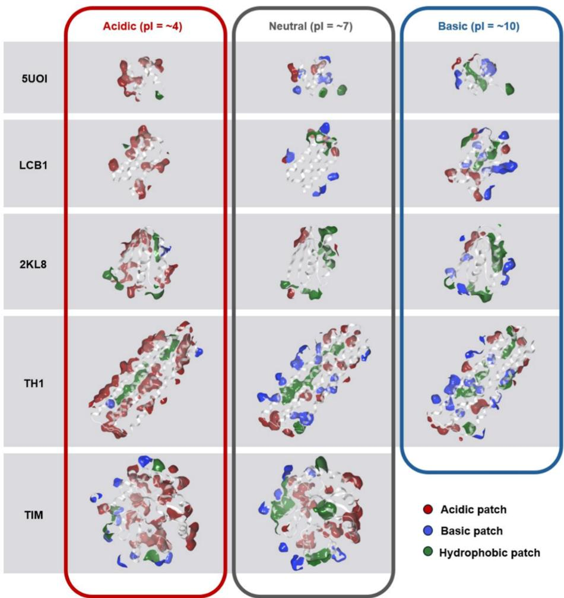
Figure 1. Designed panel of de novo Fc-fusion proteins with targeted physicochemical properties. A panel of 35 de novo proteins was designed to cover a wide range of biophysical properties, including isoelectric point (pI), surface patches, and size. (A) AlphaFold2 structure of a representative Fc fusion protein (left). Different de novo scaffolds were included in the fusion panel (right). Biophysical calculations were performed solely on the de novo protein without Fc and linker. Alpha helices and beta sheets are colored in green and blue, respectively. (B) Representative structures of differently charged variants for each de novo scaffold. Surface patches are displayed in the colors indicated in the legend. To qualify as a surface patch, a continuous charge surface area \(>40\AA^2\) or a continuous hydrophobic surface area \(>50\AA^2\) was required. The patches on the front face are hidden for better visualization.
Figure 2. The designed panel of de novo proteins. All 35 de novo proteins are shown with their names and pI values labeled. Positive (blue), negative (red), and hydrophobic (green) patches are displayed. Each variant is arranged in order of increasing pI from left to right (low pI; acidic, to high pI; basic) and is given a unique identifying letter in alphabetical order. As a result, the most acidic variant within each scaffold was labeled A up to the most basic pI value (e.g., 2KL8-A is the protein variant from the 2KL8 scaffold with the most acidic pI and 2KL8-E has the most basic). For the LCB1 and TH1 charge series, three representative variants from each series were given nomenclature corresponding to their pI value relative to each other (e.g., acidic, near-neutral, and basic, whereby acidic-TH1 has the lowest pI of the 3 chosen TH1 proteins).
Table 1. Pharmacokinetic Properties of All Fc-Fusion Proteins and Values of Three Descriptors Significantly Correlated with Clearance
| fusion protein | MW (kDa) | AUC0-last (nM × hr) | clearance (mL/h/kg) | pI_seq | net charge | patch_pos_% |
| 2KL8-A | 7.20 × 10^1 | 2.59 × 10^3 | 1.08 × 10^1 | 3.64 × 10^0 | -1.59 × 10^1 | 1.46 × 10^0 |
| 2KL8-B | 7.20 × 10^1 | 4.69 × 10^3 | 5.92 × 10^0 | 3.93 × 10^0 | -1.13 × 10^1 | 3.29 × 10^0 |
| 2KL8-C | 7.24 × 10^1 | 4.24 × 10^3 | 6.51 × 10^0 | 4.70 × 10^0 | -2.98 × 10^0 | 1.07 × 10^1 |
| 2KL8-D | 7.20 × 10^1 | 4.36 × 10^3 | 6.37 × 10^0 | 7.18 × 10^0 | -2.06 × 10^-1 | 7.77 × 10^0 |
| 2KL8-E | 7.22 × 10^1 | 1.28 × 10^3 | 2.17 × 10^1 | 1.01 × 10^1 | 3.54 × 10^0 | 1.27 × 10^1 |
| SUOI-A | 6.34 × 10^1 | 1.54 × 10^4 | 2.05 × 10^0 | 3.84 × 10^0 | -1.10 × 10^1 | 1.84 × 10^0 |
| SUOI-B | 6.35 × 10^1 | 2.06 × 10^4 | 1.53 × 10^0 | 4.22 × 10^0 | -6.48 × 10^0 | 3.83 × 10^0 |
| SUOI-C | 6.33 × 10^1 | 1.08 × 10^4 | 2.92 × 10^0 | 4.31 × 10^0 | -4.06 × 10^0 | 5.26 × 10^0 |
| SUOI-D | 6.34 × 10^1 | 3.46 × 10^3 | 9.13 × 10^0 | 6.38 × 10^0 | -2.19 × 10^-2 | 8.57 × 10^0 |
| SUOI-E | 6.35 × 10^1 | 9.18 × 10^3 | 3.43 × 10^0 | 6.44 × 10^0 | -2.71 × 10^-2 | 1.09 × 10^1 |
| SUOI-F | 6.35 × 10^1 | 1.84 × 10^3 | 1.71 × 10^1 | 9.89 × 10^0 | 1.04 × 10^0 | 1.42 × 10^1 |
| SUOI-G | 6.35 × 10^1 | 4.25 × 10^3 | 7.41 × 10^0 | 9.89 × 10^0 | 1.03 × 10^0 | 1.42 × 10^1 |
| SUOI-H | 6.34 × 10^1 | 2.03 × 10^3 | 1.55 × 10^1 | 1.05 × 10^1 | 2.08 × 10^0 | 1.31 × 10^1 |
| SUOI-I | 6.35 × 10^1 | 1.44 × 10^3 | 2.19 × 10^1 | 1.05 × 10^1 | 3.14 × 10^0 | 1.71 × 10^1 |
| LCB1-A | 6.73 × 10^1 | 5.02 × 10^2 | 5.92 × 10^1 | 3.84 × 10^0 | -1.52 × 10^1 | 8.49 × 10^0 |
| Acidic-LCB1 | 6.73 × 10^1 | 6.80 × 10^2 | 4.37 × 10^1 | 3.84 × 10^0 | -1.51 × 10^1 | 3.82 × 10^0 |
| LCB1-B | 6.74 × 10^1 | 1.03 × 10^4 | 2.89 × 10^0 | 4.41 × 10^0 | -5.91 × 10^0 | 7.74 × 10^0 |
| Basic-LCB1 | 6.75 × 10^1 | 3.57 × 10^2 | 8.30 × 10^1 | 9.73 × 10^0 | 2.23 × 10^0 | 1.32 × 10^1 |
| LCB1-C | 6.75 × 10^1 | 5.82 × 10^2 | 5.09 × 10^1 | 7.15 × 10^0 | 5.56 × 10^-2 | 1.37 × 10^1 |
| LCB1-D | 6.75 × 10^1 | 1.19 × 10^3 | 2.49 × 10^1 | 7.15 × 10^0 | 3.87 × 10^-2 | 1.35 × 10^1 |
| LCB1-E | 6.75 × 10^1 | 1.45 × 10^2 | 2.04 × 10^2 | 9.73 × 10^0 | 2.22 × 10^0 | 1.58 × 10^1 |
| LCB1-F | 6.75 × 10^1 | 1.54 × 10^2 | 1.92 × 10^2 | 9.73 × 10^0 | 2.19 × 10^0 | 1.60 × 10^1 |
| LCB1-G | 6.74 × 10^1 | 3.92 × 10^2 | 7.58 × 10^1 | 9.77 × 10^0 | 2.21 × 10^0 | 1.07 × 10^1 |
| LCB1-H | 6.73 × 10^1 | 5.30 × 10^2 | 5.60 × 10^1 | 9.88 × 10^0 | 2.20 × 10^0 | 8.99 × 10^0 |
| Near-Neutral-LCB1 | 6.75 × 10^1 | 1.64 × 10^4 | 1.80 × 10^0 | 7.15 × 10^0 | 7.31 × 10^-2 | 1.19 × 10^1 |
| TH1-A | 9.03 × 10^1 | 2.38 × 10^3 | 9.30 × 10^0 | 4.64 × 10^0 | -1.00 × 10^1 | 1.21 × 10^1 |
| Acidic-TH1 | 9.01 × 10^1 | 7.45 × 10^2 | 2.98 × 10^1 | 3.99 × 10^0 | -3.70 × 10^1 | 4.95 × 10^0 |
| TH1-B | 9.04 × 10^1 | 5.85 × 10^2 | 3.78 × 10^1 | 6.74 × 10^0 | -3.13 × 10^-2 | 1.72 × 10^1 |
| Basic-TH1 | 9.04 × 10^1 | 1.75 × 10^1 | 1.27 × 10^3 | 9.39 × 10^0 | 2.13 × 10^0 | 1.86 × 10^1 |
| Near-Neutral-TH1 | 9.02 × 10^1 | 2.68 × 10^3 | 8.26 × 10^0 | 5.02 × 10^0 | -4.94 × 10^0 | 1.54 × 10^1 |
| TIM-A | 9.71 × 10^1 | 5.10 × 10^3 | 4.04 × 10^0 | 4.34 × 10^0 | -1.27 × 10^1 | 9.95 × 10^0 |
| TIM-B | 9.71 × 10^1 | 5.61 × 10^3 | 3.67 × 10^0 | 4.50 × 10^0 | -8.21 × 10^0 | 1.13 × 10^1 |
| TIM-C | 9.47 × 10^1 | 2.42 × 10^3 | 8.73 × 10^0 | 4.72 × 10^0 | -3.96 × 10^0 | 1.11 × 10^1 |
| TIM-D | 9.47 × 10^1 | 1.04 × 10^3 | 2.02 × 10^1 | 6.49 × 10^0 | -4.47 × 10^-2 | 1.28 × 10^1 |
| TIM-E | 9.42 × 10^1 | 1.49 × 10^3 | 1.43 × 10^1 | 6.49 × 10^0 | -4.94 × 10^-2 | 1.33 × 10^1 |
RESULTS
Design and Production of a Panel of Fc-Fusion Proteins with Diverse Physicochemical Attributes
We selected de novo-generated proteins as an ideal proof-of-concept molecule type to systematically study the impact of biophysical properties on Fc-fusion disposition. Designed in silico, these idealized scaffolds have different sizes and topologies and can, in theory, tolerate dramatic changes in surface amino acid composition without compromising molecule integrity. Five original scaffolds were selected as the basis for our initiative: a \(4.8\mathrm{kDa}\) minimal protein with three \(\alpha\) -helices (PDB ID: 5UOI; 169), a \(6.7\mathrm{kDa}\) minibinder termed LCB1 that binds to SARS-CoV-2 spike protein (PDB ID: 7JZL and 7JZU; 170), a \(9\mathrm{kDa}\) ferredoxin-like fold protein (PDB ID: 2KL8; 171), a \(18\mathrm{kDa}\) four-helical bundle protein TH1, and a \(20\mathrm{kDa}\) TIM barrel (PDB ID: 5BVL, 6WVS; 172173174). Variants of each scaffold with high, neutral, and low pI, and with different sizes and distributions of surface positive, negative, or hydrophobic patches were designed using MPNN to find allowable amino acid mutations, manual mutation selection to introduce the minimum number of point mutations needed to achieve the surface distribution goals, and finally AlphaFold2 to ensure the mutated protein still folded into the same shape.175176
To this end, a panel of proteins was successfully generated that varied in size from five to \(20\mathrm{kDa}\) , bearing isoelectric points (pI) of around 4, 7, or 9 and differing levels of surface charge and hydrophobicity (Figures 1 and 2, Table 1). These proteins were fused to the C-terminus of the human IgG1 stable effector functionless 2 (SEFL2) Fc, expressed and secreted from mammalian cells, and purified from CM.55,72 Fc-fusion proteins with pI greater than 9 were generally more challenging to be produced and were often prone to proteolytic cleavage, likely due to the high content of solvent exposed positively charged amino acids (data not shown). Protein lots for which clipped products constituted \(>30\%\) of the end product were discarded. The final panel consisted of 35 distinct Fc-fusion proteins (Table S1) for in vivo PK analysis.
In Silico Charge Descriptors Correlate Strongest with CL in Wild-Type Mice
Figure 3. Charge descriptors correlate strongest with murine clearance.
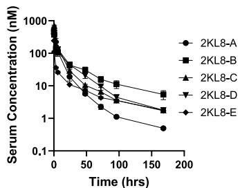
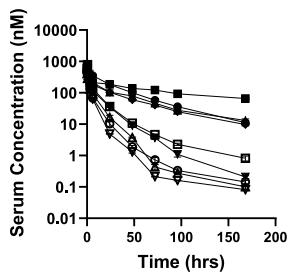
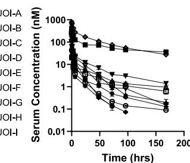
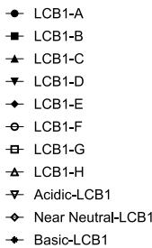
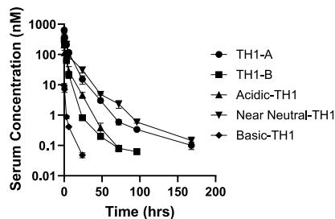
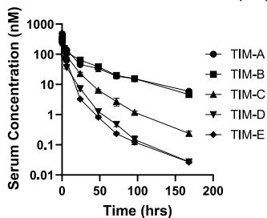
- Serum concentration—time profiles for each Fc-fusion protein following a single intravenous bolus dose \((2\mathrm{mg / kg})\) in C57BL/6J mice, grouped by scaffold.
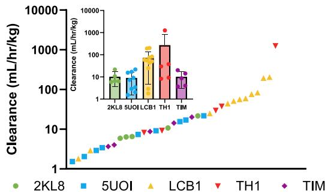
- Noncompartmental analysis was used to obtain clearance (CL) estimates, and a large range of values was observed, from \(1.53\times 10^{0}\) to \(1.27\times 10^{3}\mathrm{mL/h/kg}\) .
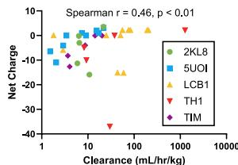
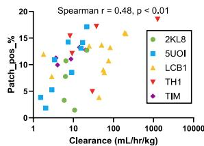
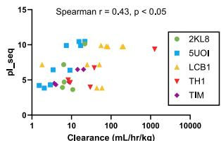
- Physicochemical descriptors were calculated for each designed Fc-fusion protein by utilizing the amino acid sequence of the de novo portion only. A Spearman correlation matrix was performed to identify the sequence based physicochemical descriptors most strongly related with CL. Of the 53 parameters assessed, sequence-based pI (pI_seq), net charge, and percentage of total surface area in positive protein patches (patch_pos %) exhibited some of the highest Spearman correlations.
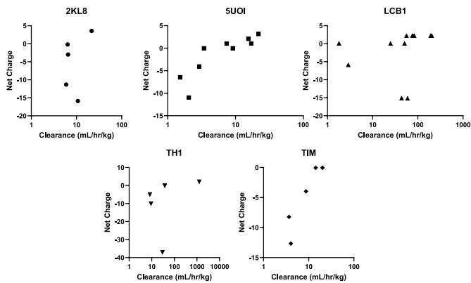
- Examination of individual Fc-fusion scaffolds demonstrated a U-shaped relationship with decreasing, then increasing CL with increasing positive net charge.
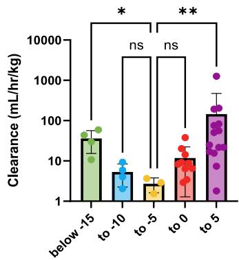
- All protein CL values were binned based on their net charge and graphed simultaneously. A clear U-shaped relationship was observed where net negative or positive charge extremes were associated with significantly elevated CL relative to the median group. Kruskal-Wallis test, \(^*p<0.05\) , \(^{**}p<0.01\).
All Fc-fusion proteins were individually administered to wild-type C57BL/6J mice via a \(2\mathrm{mg / kg}\) intravenous bolus dose. As no known binding partners were anticipated to be present in wild-type mice, the total clearance (CL) obtained via noncompartmental analysis of each protein was interpreted as the \(\mathrm{CL}_{\mathrm{ind}}\) or CL driven by target-independent mediated processes. There were significant differences in the serum concentration-time profiles, and a large spread of CL was observed that ranged from \(1.53 \times 10^{0}\) to \(1.27 \times 10^{3} \mathrm{~mL} / \mathrm{h} / \mathrm{kg}\) (Figure 3A,B and Table 1). No relationship was identified between molecular weight and either CL or total serum exposure as determined by the area under the curve (AUC, Figure S1A).
Figure 4. Proteins with relatively excessive negative or positive charge exhibit increased tissue accumulation. (A) Net charge and (B) clearance (CL) of six total proteins from the TH1 and LCB1 modalities with an acidic, a basic, and near-neutral pI that exhibited U-like relationships between net charge and CL. (C) Serum-concentration time profiles depicting the decreased exposure and increased CL for all charge variants relative to the near-neutral pI proteins. \(N = 3\) separate animals per point. (D) Biodistribution studies were performed by examining tissue concentrations within livers, kidneys, and spleens \(30\mathrm{min}\) after an intravenous bolus dose \((2\mathrm{mg / kg})\) to C57BL/6J mice. Significant increases in tissue retentions were observed for all proteins with net charge extremes relative to the near-neutral pI comparators. Each point represents an individual animal, two-way ANOVA with Dunnett’s multiple comparisons; ns, not significant, \(^{*}p < 0.05\) , \(^{**}p < 0.01\) , \(^{****}p < 0.0001\) .
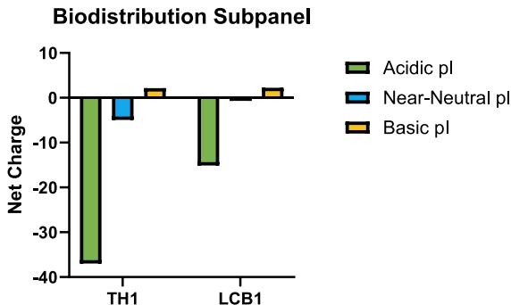
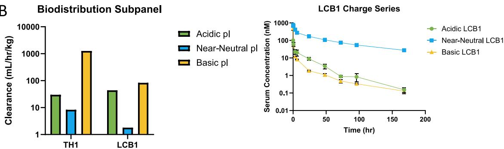
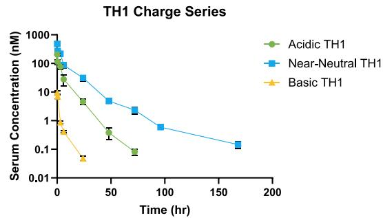
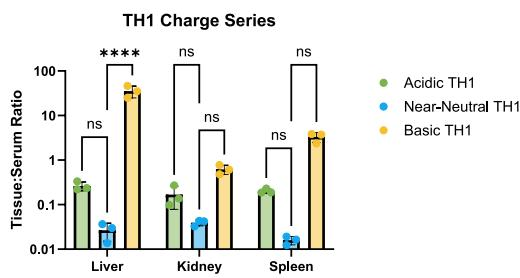
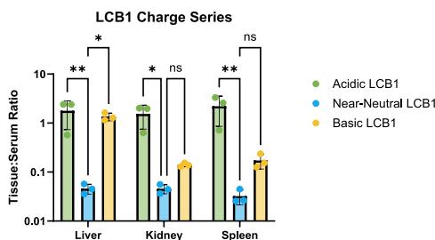
A Spearman correlation matrix was conducted as a starting point to identify the physicochemical attributes that were most associative with murine CL (Figure 3C). These descriptors were computed in the MOE using conformational ensembles of the de novo module generated by running LowModeMD on Alpha-Fold-predicted input structures. Ensemble calculations were obtained using only the designed protein portion (e.g., the \(7\mathrm{kDa}\) LCB1 rather than the \(\sim64\mathrm{kDa}\) bivalent LCB1 Fc-fusion). The
isoelectric point computed from the amino acid sequence (pI_seq, Spearman \(r = 0.44\) , \(p < 0.01\) ), net charge calculated from the amino acid sequence (Spearman \(r = 0.47\) , \(p < 0.01\) ), and the percentage of positive protein patch surface area (patch_pos_%, Spearman \(r = 0.47\) , \(p < 0.01\) ) were identified as the in silico descriptors possessing the highest Spearman correlations with CL (Figure 3C, Tables S2-S4). Inspection of the individual plots of the top three correlated parameters and CL revealed U-shaped relationships within scaffold series where decreasing and then increasing CL was observed as the parameter values increased (Figures 3D, S1B,C). The trend was most distinct for net charge, where a hooked tail was observed for every de novo scaffold series. This effect was slightly less pronounced in the 5UOI and TIM series, likely because they lacked variants with strongly negative charges (net charge at or below \(-15\) ). This was graphically depicted for all proteins by placing the calculated CL value into five bins based on their net charges, where significant elevations in CL were observed for the extremes of opposite polarity relative to the median (Figure 3E).
Figure 5. Nonspecific endocytosis and human FcRn recycling are undesirably impacted by increased positive charge. Nonspecific endocytosis (NSE) measurements were performed in CHO-K1 cells at pH 5.8 (A) and pH 7.4 (B). A single cell-associated Fc-fusion protein (i.e., surface and intracellular) was detected via immunostaining with a fluorescently conjugated antihuman Fc antibody and flow cytometry (N=3-4 per protein). Population median fluorescent intensities were converted to antibody binding capacities (ABCs), which is a quantitative approach to facilitate interday comparisons. Significant Spearman correlations were measured between average CHO-K1 ABCs at both pH values and murine clearance (CL) (pH 5.8: Spearman \(r = 0.55\) , \(p < 0.001\) ; pH 7.4: Spearman \(r = 0.54\) , \(p < 0.001\) ). (C) Relationships were evaluated between CHO-K1 ABCs and sequence-based pI, net charge, and percentage of total surface area in positive protein patches (patch_pos_%), which were the three descriptors most strongly correlated with murine CL. All three plots exhibited sigmoidal shapes with significant Spearman correlations in which each relationship plateaued for proteins with a net charge above \(-5.0\) . Spearman r of pI_seq, net charge, and patch_pos_% were 0.71 ( \(p < 0.0001\) ), 0.70 ( \(p < 0.0001\) ), and 0.67 ( \(p < 0.0001\) ), respectively. (D) CHO-K1 ABCs were plotted against the same net charge bins as shown in Figure 2 to better understand the mechanisms driving CL. Elevated NSE was observed only above a net charge of \(-5.0\) , suggesting two distinct clearance pathways for strongly positive and negative proteins. (E) Net charge was compared to CHO-K1 ABCs for individual protein modalities, which demonstrated dramatically more defined relationships than the aggregated plots. (F) Cellular FcRn recycling studies were conducted to obtain human FcRn recycling efficiency metrics of the TH1 and LCB1 charge series. An effector functionless Fc research analog of ustekinumab (SEFL2-modified-ustekinumab) was included as the control for ideal behavior in the assay. Fc-fusion scores were normalized and compared to that of SEFL2-modified ustekinumab. In general, increasing cellular nonspecificity resulted in poorer FcRn recycling efficiencies. \(N = 5 - 8\) per protein; \(\ast \ast \ast p < 0.001\) , \(\ast \ast \ast \ast p < 0.0001\) following an ordinary one-way ANOVA with Dunnett’s multiple comparisons relative to SEFL2-modified ustekinumab.
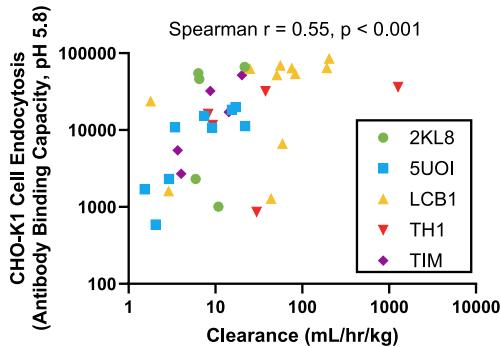
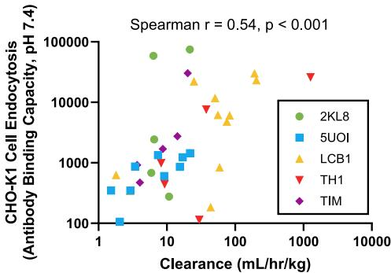
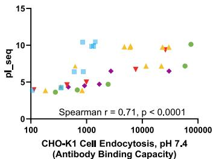
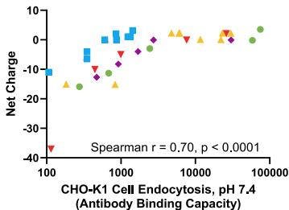
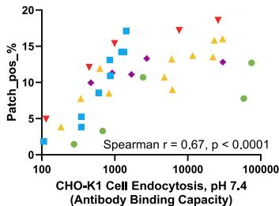
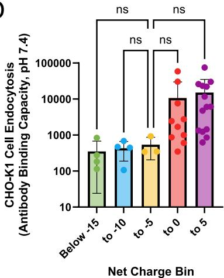
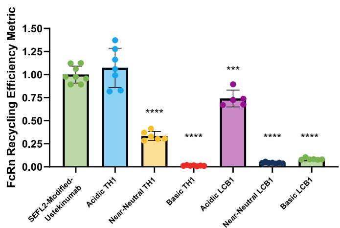
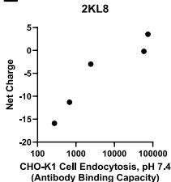
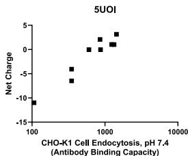
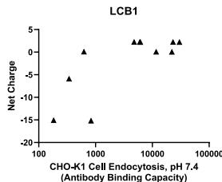
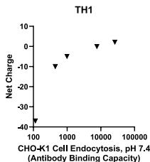
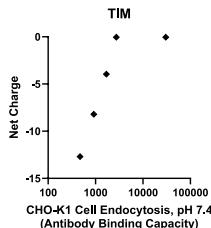
Relative Net Charge Extreme Is Associated with Increased CL and Elevated Tissue Accumulation
We expanded on our observations of net charge by conducting biodistribution assessments in mice on a subset of TH1 and LCB1 proteins, as these scaffolds contained proteins with a broad range of CL and several available mutants whose general nomenclatures for this work were based on their relative pI values. Correspondingly, the five TH1 proteins included Acidic-TH1, Near-Neutral-TH1, Basic-TH1, and two additional near neutral variants (TH1-A and TH1-B). The 11 LCB1 proteins were Acidic-LCB1, Near-Neutral-LCB1, and Basic-LCB1-basic, as well as eight additional variants: two acidic (LCB1-A and LCB1-B), two near neutral (LCB1-C and LCB1-D), and four basic (LCB1-F, LCB1-E, LCB1-G and LCB1-H). LCB1-G contained fewer charged residues by substituting some Asp, Glu, Arg, and Lys residues with Gln. LCB1-H contained the fewest charged residues, with nearly all Aps, Glu, Arg and Lys residues replaced with Gln.
From this, one protein with a near-neutral pI (near-neutral-TH1 and near-neutral-LCB1), one acidic with a more negative net charge (acidic-TH1 and acidic-LCB1), and one basic with a more positive net charge (basic-TH1 and basic-LCB1) were chosen from each of the LCB1 and TH1 scaffolds (Figure 4A-C, Table 1). Mouse livers, kidneys, and spleens were collected 30 min following intravenous bolus administration of each protein at a \(2\mathrm{mg / kg}\) dose level. These tissues were chosen because of their high blood perfusion rates, known significant contribution to overall mAb catabolism, and prior work demonstrating the impact of protein charge on its biodistribution.177178179180181182183184185 Accordingly, we observed increased tissue/serum ratios for variants harboring excess net charge as compared to the corresponding near-neutral pI protein of the same scaffold, irrespective of bin (Figure 4D). These results agree with the findings from others whereby proteins with drastic net charge differences from a parental form exhibit faster CL and higher tissue accumulation.186187188189190191192
The Role of Charge on the Cellular Processes That Dictate CL for Fc-Fusions
Our next goal was to establish the dominant mechanisms driving charge-sensitive protein disposition, with an initial focus on the serum PK, namely, the shared \(\mathrm{CL}_{\mathrm{ind}}\) pathways between mAbs and the Fc-fusion proteins. We hypothesized that the same electrostatic elimination mechanisms important for mAbs also applied to the novel Fc-fusion proteins whereby higher solvent-exposed positive charge would lead to enhanced NSE, higher intracellular nonspecific binding, and reduced FcRn recycling efficiency.193 This was tested by first measuring NSE using our previously established cell-based assay in which nonspecific protein internalization is quantified in CHO-K1 cells at pH values of 5.8 and 7.4.194195 Performing the assay at near-neutral pH is a direct evaluation of NSE under conditions analogous to those of the extracellular environment. The acidic pH 5.8 condition is meant to mimic the endosomal setting where shifts in nonspecificity may transpire due to acidification during endosomal trafficking and also where the FcRn interaction can occur.
A large spread in NSE values were measured across the entire Fc-fusion protein series that correlated significantly with murine CL at both pH values tested (Spearman r 0.55, \(p < 0.001\) at pH 5.8; 0.54, \(p < 0.001\) at pH 7.4; Figures S2A,B and S2A-C). Increased NSE at pH 5.8 relative to pH 7.4 was observed for nearly every protein examined (Figure S2A,B), suggesting an increase in cellular nonspecific interactions at acidic pH.196 To bolster our observations of a pH-dependent relationship with NSE, we included previous assessments on 18 mAbs from our past reports with additional NSE measurements for 8 analytes conducted for the current study at pH 5.8.197198 All mAbs showed increased NSE at acidic pH (Figure S2D). CHO-K1 NSE values at both pH values plotted for all 54 proteins (18 mAbs, 35 Fc-fusion proteins) show a strong relationship (Figure S2E). These observations support our previous conclusions that a higher positive charge at acidic pH may enhance the cellular nonspecificity of therapeutic proteins while expanding our initial observations to suggest a more general mechanism that is largely independent of Fc-protein modality.199
To better understand how physicochemical characteristics could inform on the cellular processes important for Fc-fusion protein \(\mathrm{CL}_{\mathrm{ind}}\) , we graphically explored the relationship between net charge, pI_seq, or patch_pos_% and CHO-K1 NSE values at pH 7.4. When analyzed together, all showed sigmoidal relationships, with an expansive NSE range encompassing the plateau of a given descriptor (Figure 5C). Additionally, no associations were noted between NSE and any calculated hydrophobic descriptor (Figure S3). Correspondingly, the results were similar if NSE readouts were binned by net charge: although a general increase was observed as net charge grew more positive, immense variation was observed for proteins with relatively similar net charges (Figure 5D). Consistent with these observations, inclusion of the sequence-based net charge of the mAbs with the calculated net charge of the Fc-fusion proteins using the full amino acid sequences again showed no relationship with CHO-K1 NSE at pH 7.4 (Figure S4A).44 However, when individual Fc-protein scaffolds were examined, notable correlations were observed for pI_Fc, net charge, and patch_pos_% where increasing NSE was generally associated with increasing positive charge (Figures 5E, S4B,C).
Next, cell-based trafficking assays were initiated to measure directly the impact of Fc-fusion protein charge properties on FcRn recycling efficiency using our previously developed method with MDCK II cells stably cotransfected with human \(\beta 2\mathrm{m}\) and GFP-tagged human FcRn (hFcRn-GFP/h \(\beta 2\mathrm{m}\) -MDCK II cells, Figure S5A). This assay incorporates both parental MDCK II and hFcRn-GFP/h \(\beta 2\mathrm{m}\) -MDCK II cells, which are incubated with test proteins at pH 5.8. We chose acidic pH conditions for our assay to increase extracellular binding between our Fc-fusion proteins and hFcRn-GFP, resulting in increased assay sensitivity to allow evaluation of Fc-bearing proteins with low NSE without prohibitive protein material requirements. Following the assay “load” step, cells are washed and then either lysed (uptake fraction) or incubated with serum-free media to allow for FcRn-mediated recycling. Afterward, media is collected (recycled fraction), the remaining cells are lysed (residual fraction), and quantification of all samples is measured via an antihuman Fc immunoassay. The hFcRn recycling efficiency metric (FREM) is subsequently calculated as an assay readout that incorporates results from both hFcRn-GFP/h \(\beta 2\mathrm{m}\) -MDCK II (specific interactions) and parental MDCK II cells (nonspecific interactions, see Methods for full details). In our past report, mAbs with FREM scores below \(50\%\) of the reference compound were identified as having increased risk of elevated \(\mathrm{CL}_{\mathrm{ind}}\) while scores below \(25\%\) were indicative of the mAb possessing rapid \(\mathrm{CL}_{\mathrm{ind}}\).
For the current work, the six Fc-fusion proteins from the TH1 and LCB1 charge biodistribution subpanels were analyzed to cover a broad range of physicochemical attributes and dispositional behaviors. A research analog of ustekinumab constructed on an Fc scaffold with impaired Fc-gamma effector function (SEFL2-modified-ustekinumab) was included at an equimolar concentration as a reference for a mAb with low cellular nonspecificity and high FcRn recycling efficiency.200 A substantial impact of positive charge on hFcRn recycling efficiency was observed with both positive Fc-fusion variants exhibiting very low FREM scores (Figures 5F, SSB-I). The negative TH1 and LCB1 proteins exhibited the highest FREMs among the Fc-fusion proteins with no quantifiable difference in the hFcRn recycling efficiency of the acidic pI TH1 mutant when compared to the SEFL2-modified-ustekinumab. In general, higher nonspecificity associated with more positive charge resulted in a decreased FREM except for the near neutral LCB1 protein. Despite having lower cellular nonspecificity when compared to the basic pI LCB1 mutant (Figures S2B and SSE), the near neutral LCB1 Fc-fusion displayed a slightly poorer recycling output than its more positively charged counterpart (Figure SSC,H). From these combined results, we conclude that higher extra- and intracellular nonspecificity arising from exposed positive charge is detrimental to the elimination rate of Fc-fusion proteins by driving both higher NSE and inferior FcRn trafficking dynamics. Additionally, neither net NSE nor a diminished ability to undergo FcRn-mediated recycling could explain the elevated murine CL for the Fc-fusion proteins with very negative net charges.
Several deductions can be made from these results. The first is that the mechanisms driving increased CL for the most negatively charged Fc-fusion proteins are distinct from those for the more positively charged ones. This limits the utility of nonspecific assessments for highly anionic proteins when attempting to identify molecules with elevated CL. Second, the calculated global charge descriptors could not provide precise information on cellular nonspecific behavior. Even though a conserved tendency for reduced NSE with lower positive charge was found within each protein scaffold series, the magnitude of the decrease was challenging to anticipate. This was further exemplified when mAb net charges were plotted alongside the Fc-fusion net charge values, resulting in a complete lack of any in silico-in vitro relationship (Figure S4A). The observations highlight the need for more refined charge descriptors to better understand localized electrostatic-cellular interactions. 201 Additionally, the descriptor-NSE relationships were not always directly proportional, even within scaffold investigations. These results correspond to our past efforts where strong trends were observed between net charge and NSE for point mutant derivatives of a preclinical set of mAbs, but not when a broader panel of mAbs were evaluated together. 202 This emphasizes the importance of experimental measures to assess the impact of charge characteristics on cellular protein handling to inform on in vivo CL behavior of Fc-proteins.
The Role of Charge on the Non-Target Tissue Accumulation for Fc-Fusions
Following the evaluation of CL determinants for the produced Fc-fusion proteins, we subsequently aimed to understand the mechanistic factors driving increased tissue retention due to charge variation. The first major barrier to therapeutic protein biodistribution is the interaction with the vascular endothelia and ensuing extravasation, which varies across tissue types due to organ and endothelial heterogeneity.203204205206207208 In addition to liver, kidney, and spleen, skin and skeletal muscle have been identified as important organs for net mAb catabolism and IgG homeostasis.209210211212213214215 These two tissue types contain nonfenestrated, continuous endothelial beds.216217 In general, apical-to-basolateral vascular permeability of protein within endothelium can occur down the concentration gradient via paracellular movement between the interendothelial junctions or through the cell via transcellular flux.218219220221222223224225226227 A relationship was previously established in which endothelial permeability declined with increasing molecular radius up to roughly that of serum albumin. Any further size increases resulted in negligible differences in measured permeability.228 From these combined morphological and functional studies on macromolecular endothelial permeability, transcellular movement would be anticipated to be the predominant extravasation pathway within continuous endothelial beds for the currently generated Fc-fusion proteins (MW range \(\approx 55 - 75\mathrm{kDa}\) ), which could occur following both specific or nonspecific endocytosis in receptor-dependent and -independent manners.229230231232233234235236237238 Thus, charged-mediated alterations in either endothelial NSE or intracellular trafficking could lead to shifts in vascular permeability within these endothelial types. However, the role of endothelial FcRn in the extravasation of immunoglobulin G antibodies and Fc-proteins is still unclear.239240241242
Once inside the interstitial space, the Fc-fusion proteins will undergo diffusive and convective transport that can be affected by several physical and physicochemical aspects.243244245246247248 Glycosaminoglycans are a major general component of the interstitial extracellular matrix that bear a net negative charge, which can lead to repulsion or attraction with anionic or cationic proteins, respectively.249250251252253254255 Elimination from the tissue space would be due, in part, to egression via lymphatic drainage and/or intracellular catabolism by resident interstitial cells.256257258259
Electrostatic interactions between the Fc-fusion proteins and these various tissue components could result in changes in their net accumulation and overall distribution by altering interactions with the cellular and structural features of the interstitium. When combined with extravasation, charge-mediated influences could, therefore, effectively impact the entry, transit, and exit from a given tissue.
We took advantage of the diverse physicochemical, cellular, and dispositional properties of the TH1 charge subseries to conduct detailed investigations within a 3D in vitro microvascular network (MVN) model, which has distinct vascular and
interstitial spaces. 260 The microphysiological system (MPS) facilitates the self-assembly of co-cultured endothelial (human umbilical vein ECs, HUVECs, stably expressing green fluorescent protein) and stromal cells (human lung fibroblasts) into perfusable, continuous MVNs that exhibit a glycocalyx and tight junctions whose macromolecular permeability more appropriately resembles in vivo values.
Table 2. Isoelectric Point Comparison of Unlabeled and Fluorescently Conjugated Molecules vs 1X FITC and Dylight650-Labeled Molecules
| molecule | pI | ||
| unlabeled | DL650 | FITC | |
| Near-Neutral-TH1 | 6.13 | 5.42 | 5.77 |
| Basic-TH1 | 7.92 | 6.72 | NA |
| Acidic-TH1 | 4.78 | 4.70 | 4.91 |
Table 3. Isoelectric Point Comparison of Unlabeled vs 0.5X Dylight650- or 0.5X FITC-Labeled Molecules
| molecule | pI | ||
| unlabeled | DL650 | FITC | |
| Near-Neutral-TH1 | 6.18 | NA | NA |
| Basic-TH1 | 8.02 | 6.96 | 7.16 |
| Acidic-TH1 | 4.90 | NA | NA |
We first compared the behavior of differently charged proteins in the interstitium by quantifying their diffusion and immobile fractions via FRAP. The TH1 charge panel was labeled with fluorescein (FITC) and the pI of the conjugated proteins assessed via imaged capillary isoelectric focusing (icIEF, Tables 2 and 3, Figure S6). Following \(24\mathrm{h}\) preincubations of FITC labeled TH1 proteins within microfluidics devices, the vascular compartment was identified by injecting a tetramethylrhodamine (TRITC) labeled \(70\mathrm{kDa}\) dextran. FRAP was then immediately performed on regions of interest within the interstitial space (Figure 6A,B). The TH1 Fc-fusion protein with acidic pI showed significantly higher diffusivity compared to the near-neutral and basic TH1 variants (Figure 6C, n.s., \(*p < 0.05\) following Kruskal-Wallis test with Dunn’s multiple comparisons relative to the near-neutral TH1). All evaluated TH1 Fc-fusions showed similar immobile fractions (Figure 6D), but we observed a notable difference in the MVN samples treated with the basic pI TH1 protein, whereby visible deposition was observed throughout the interstitial space (Figure 6B, arrowheads). Additionally, we repeated the FRAP measurements in the absence of MVNs and observed significant shifts in diffusivity and immobile fractions that trended with charge (Figure S7). This suggests that matrix remodeling by the MVN is occurring and underscores the significance of evaluating these measurable parameters within a 3D cellular architecture that closely resembles human tissue.
Next, the vascular-to-interstitial permeabilities of the TH1 charge subseries were measured in MVNs (Figure 6E). However, a limitation of the employed MPS is that endothelial monolayers lining the device channels exhibit permeability that is substantially higher than the three-dimensional MVNs.261 TH1 permeability experiments were therefore performed over a period of \(12\mathrm{min}\) , which was shown previously to facilitate quantitation of macromolecular flux predominated by MVN permeability.262263264 The DL650 fluorophore was chosen due to its favorable spectral and photostability properties over FITC in
addition to the need for an alternative label to avoid overlap with the green fluorescent protein within HUVECs. DL650 labeling was performed at the same dye-to-protein challenge used for FITC, but icIEF indicated a more pronounced impact of DL650 on the pI of the cationic TH1 Fc-fusion (Table 2, Figure S6). The final DL650 amount was therefore reduced only for this protein to less than 1:1. The \(70\mathrm{kDa}\) TRITC-dextran used for FRAP was cojected with each DL650-labeled TH1 protein to serve as a reference molecule with a similar molecular weight. The permeability of the TH1 Fc-fusion with basic pI was 2-fold higher than the acidic pI TH1, and half that of the TH1 protein with near-neutral pI. However, the permeability differences between all tested TH1 Fc-fusions were not statistically significant and fell within the experimental variance of the 70 kDa dextran control (Figure 6F, n.s.; Kruskal-Wallis test with Dunn’s multiple comparisons relative to the dextran control).
To better understand the localized accrual of protein within MVNs observed during FRAP analysis, we incubated the DL650-labeled TH1 proteins for a total of \(60\mathrm{min}\) (Figure 6G). All TH1 proteins exhibited colocalization with the ECs and we observed a notably higher fluorescent signal in the positive TH1 group that trended with the CHO-K1 NSE assay results (Figure S2B). Furthermore, the cationic TH1 Fc-fusion appeared to residualize throughout both interstitial and vascular portions of the MPS. Due to the aforementioned limitations arising from the channel monolayers, we cannot conclude that MVN permeability differences were or were not contributing to the higher interstitial signal over the \(60\mathrm{min}\) incubations. However, these MPS observations support cellular retention as an important component of accumulation in continuous endothelial beds for Fc-fusion proteins with aberrant positive charge properties. When the MVN results are combined with the findings from all other cellular assessments, we propose enhanced NSE and inefficient FcRn recycling as a general mechanism for increased tissue accumulation of the cationic LCB1 and TH1 proteins.
Macrophage Depletion via Liposomal Clodronate Results in Increased Splenic Accumulation of LCB1 Fc-Fusion Proteins
The results from the combined cellular assays supported distinct elimination and distribution mechanisms for anionic and cationic Fc-fusion proteins, with electrostatically driven nonspecificity a crucial component for the latter set of molecules. However, a lack of detailed understanding remained of what was causing the altered disposition of the negatively charged variants. A possible cellular explanation was receptor-mediated internalization by scavenger receptors (SRs) that would lead to more rapid elimination from the blood. SRs are expressed in a variety of cells that include resident macrophages. They exhibit broad ligand specificity that supports their role in the binding and elimination of endogenous and exogenous substances. 265266 One feature of SRs is the recognition of polyanionic substrates that has been at least partially attributed to an optimized charge distribution at the solvent interface of the tertiary structure. 267268269270271272 Such a function could lead to specific macrophage internalization of the anionic Fc-fusion proteins, an aspect that would not be recapitulated in our nonspecific cellular studies. Additionally, macrophages could also contribute to overall Fc-fusion protein disposition independently of charge due to their highly endocytic nature. 273274275276
Figure 6. Proteins with excessive negative or positive charge exhibit increased tissue accumulation via separate mechanisms. (A,B) TH1 pI subseries were FITC-labeled for immobile fraction and diffusion studies. Proteins were incubated within microphysiological devices containing human microvascular networks (MVNs) \(24\mathrm{h}\) prior to imaging to allow for interstitial equilibration. Baseline images were acquired prior to FRAP, which demonstrated significant interstitial accumulation of only the protein with basic pI, indicated by white arrows. (C) Diffusivity measurements obtained from FRAP studies identified significantly higher diffusion rates for the acidic pI protein (most negatively charged) when compared to all other analytes. (D) Representative FRAP experiment and recovery curves used to calculate the immobile fraction within the interstitial space. A trend was observed for increasing immobile fraction with increasing positive charge. (E) Schematic for microvascular permeability studies in MVN devices. Proteins were labeled with DL650 to facilitate fluorescent quantification. (F) No significant differences in microvascular permeability were observed between any protein. A \(70\mathrm{kDa}\) TRITC dextran was used as an internal control for MVN integrity. (G) Confocal images obtained \(60\mathrm{min}\) post initial perfusion revealed significant interstitial and endothelial accumulation of the basic TH1 protein.
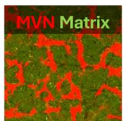
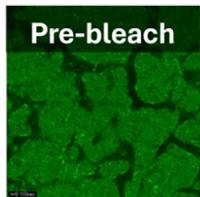
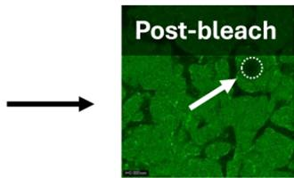
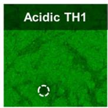
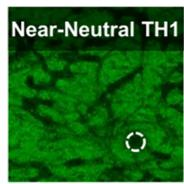
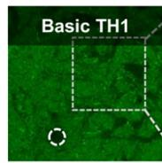
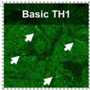
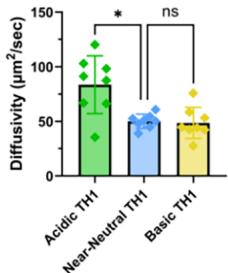
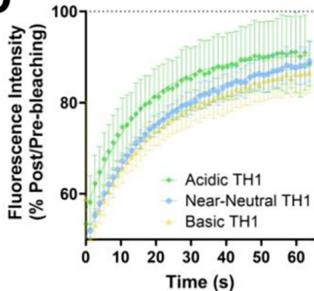
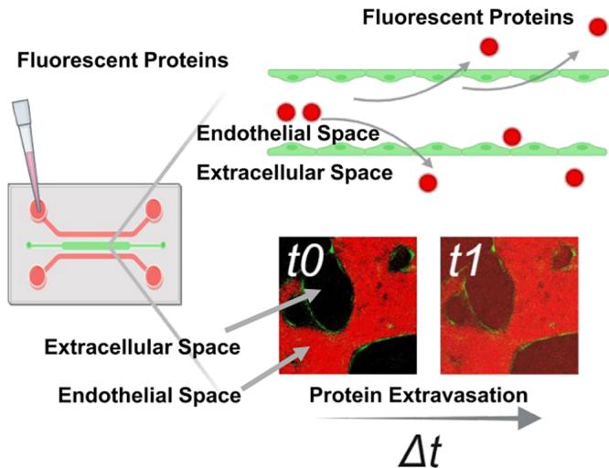
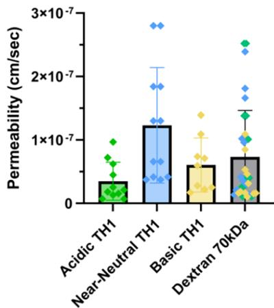
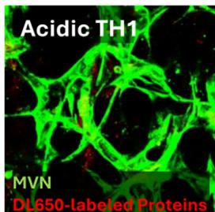
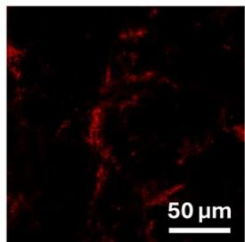
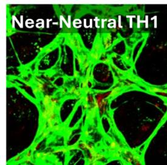
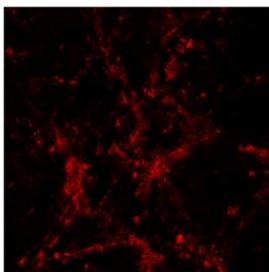
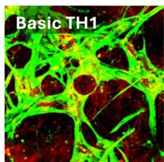
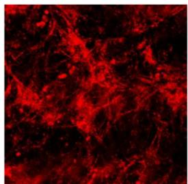
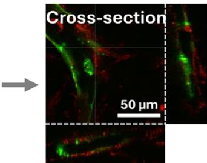
We examined the potential role of macrophages in tissue accumulation and overall CL of the LCB1 charge subset via selective depletion by liposomal clodronate. Biodistribution of these nanoparticles is primarily held in the spleen, bone marrow, and liver following intravenous administration. Exposed macro phages will phagocytose the clodronate liposomes resulting in their eventual death while surrounding cell types are minimally affected due to both low permeability and rapid clearance of free clodronate. 277278 Clodronate and control liposomes were injected 2 days prior to a \(2\mathrm{mg/kg}\) intravenous bolus dose of each of the three LCB1 subset proteins. Serum, liver, kidney, and spleen were collected \(0.5\mathrm{h}\) postdose to match the tissue types from the charge subseries examinations. Additionally, muscle was collected to serve as a control tissue with an anticipated low uptake. No significant differences between control and clodronate-loaded liposomes were observed when comparing the serum concentrations or renal and muscular tissue/serum ratios of any LCB1 protein (Figure 7A,B), consistent with the anticipated liposomal biodistribution. Splenic tissue/serum ratios and tissue concentrations increased for every LCB1 protein tested in mice that received liposomal clodronate (Figure 7B,C), indicating a role for macrophages in the net accrual within this tissue regardless of protein charge.
Figure 7. Liposomal clodronate treatment leads to increased splenic accumulation of the entire LCB1 charge series. Wild-type C57BL/6J mice received an intravenous bolus dose of control or clodronate-loaded liposomes. Approximately \(48\mathrm{h}\) later, the LCB1 charge subseries was administered intravenously with tissues and serum collected \(0.5\mathrm{h}\) postdosing. (A) No differences in serum concentrations were observed between clodronate and control liposome groups (ns, no significance following a two-way ANOVA with Sidak’s multiple comparisons). (B,C) All LCB1 proteins exhibited elevated spleen/serum ratios (B) and splenic concentrations (C) when compared to control groups. Additionally, significant differences were observed for the liver/serum ratio and hepatic concentrations for the acidic pI LCB1 Fc-fusion. \((^{*}p < 0.05,^{**}p < 0.001\) ns, not significant; two-way ANOVA with Sidak’s multiple comparisons).
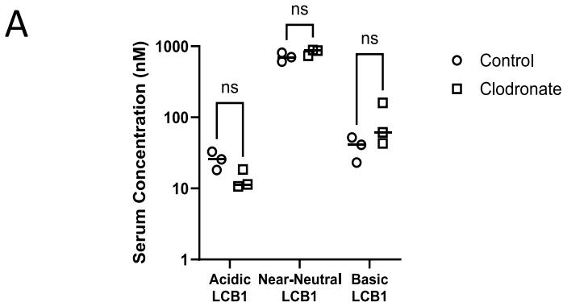
Figure 8. Charge-driven cellular mechanisms leading to high target independent clearance. Electrostatic interactions between exposed positive charge on an Fc-fusion protein and anionic regions of the cell membrane mediate adsorptive nonspecific endocytosis (NSE), which was positively and significantly correlated with murine clearance (i.e., target-independent clearance as no known binding partners in mice) of the Fc-fusions in the current work. This places an Fc-bearing therapeutic with high NSE at an eliminatory disadvantage as there is a greater initial amount of nonspecifically internalized protein, per cell, that must undergo successful FcRn recycling to prevent lysosomal catabolism. Following endocytosis, endosomal acidification will further enhance protein nonspecificity due to increases in positive charge with decreasing pH. Results from the LCB1 and TH1 subseries indicated cellular nonspecificity at acidic pH was detrimental to efficient FcRn recycling for reasons that may go beyond high NSE. It is likely that exposed positive charge within, and outside, the Fc-region can counteract proper FcRn engagement and trafficking dynamics. Possible reasons include nonspecific interactions between the endosomal membrane and Fc-fusion protein that is unbound, or even bound, to FcRn and dysfunctional pH-dependent dissociation from FcRn at the cell surface. Thus, the same factors that promote high NSE would also work against the specificity of the FcRn-Fc-fusion interaction. Elevated target-independent clearance would result from a larger fraction of nonspecifically endocytosed protein undergoing catabolism: more nontargeted cells internalizing more protein, lower total amounts successfully recycled due to impaired FcRn dynamics, and thus faster elimination rates. Note, the Fc-fusion:hFcRn interaction has been represented in a simplified manner for ease of interpretability. See Discussion for more detailed information. Illustration created using BioRender.com.
Figure 8.
These results led us to conclude that macrophage-mediated internalization may not necessarily influence the hepatic and splenic entry for the assessed proteins, but it was a critical elimination element from the tissue space of the spleen for all 3 of the LCB1 Fc-fusions. Furthermore, significant increases in hepatic accumulation for the anionic LCB1 protein indicated that resident macrophages within the liver potentially held a larger portion of the organ elimination for this charge variant when compared to the other LCB1 mutants.
DISCUSSION
The disposition of therapeutic Fc proteins such as mAbs is determined by a combination of target-mediated and target-independent processes with the latter an often overlooked yet equally important component. In this study, we successfully designed and generated de novo proteins lacking known endogenous targets in mouse to define the mechanisms driving
the target-independent disposition of Fc-fusion proteins. The panel was planned to include variants with a wide range of biophysical properties such as pI and surface patch composition to probe their relationships with in vivo and cellular processes. Our results demonstrate that cellular nonspecificity arising from electrostatic interactions between surface-exposed positive charge on the protein and negatively charged cellular components is a key factor in Fc-fusion disposition.
Correlations between in silico charge descriptors and clearance were evident within individual scaffolds but not across the entire data set, highlighting a scaffold-dependent limitation. The within-scaffold correlation suggests that charge-based descriptors are sensitive to subtle modifications when the backbone framework is held constant. However, the loss of correlation across scaffolds indicates that additional scaffold-dependent attributes influence CL. Although shape-related descriptors (e.g., radii of gyration and eccentricity) and
composition-based descriptors (e.g., \(\alpha\) -helix and \(\beta\) -strand content) are included in our current feature set, it remains unclear whether they adequately capture scaffold-specific determinants of PK, particularly given the limited number of scaffolds in this study. Expanding the scaffold repertoire will be essential to improve model generalizability, while continued refinement of structural descriptors and deeper understanding of the underlying biological mechanisms may enable more transformative advances in predictive PK modeling.279
Nonspecific uptake and subsequent elimination by targetless cells is an important component of \(\mathrm{CL}_{\mathrm{ind}}\) for antibody and Fc-based therapeutics.32,117-120 The current work highlights that charge-mediated nonspecificity influences the extent to which NSE contributes to elevated \(\mathrm{CL}_{\mathrm{ind}}\) (Figure 8). Concentrated positive charge on the surface of each Fc-fusion structure was significantly correlated with a heightened NSE at pH 7.4. Combined with our past report demonstrating reduced NSE for anti-IL-4R \(\alpha\) mAb point mutants with lowered positive surface patches, we conclude electrostatic interactions between a therapeutic protein and the cell membrane are essential for determining adsorptive NSE rates.44 However, we have highlighted the limitations of the utilized in silico charge descriptors for inferring NSE amounts across all Fc-fusion proteins, which emphasizes the complexities of these interactions. Future work aimed at refining the physicochemical relationships with cellular NSE, specifically the sensitivities of NSE to charge patch location on a given protein scaffold, will be crucial to better understanding these processes as well as guiding protein engineering strategies to reduce NSE and \(\mathrm{CL}_{\mathrm{ind}}\) .
Higher NSE would result in more protein entering a nontarget cell and thereby increase the probability of its degradation via catabolism.30 However, additional intracellular mechanisms likely impact the Fc-protein recycling efficiency in FcRn-expressing cells. We have provided results from across a multitude of protein formats that cellular nonspecificity may be enhanced with decreasing solution pH. Dynamic shifts may therefore occur in the soluble fraction of internalized Fc-protein that result in higher degrees of nonspecific surface binding to the endosomal membrane, which could prevent access to FcRn. Nonspecificity might also directly impair FcRn engagement itself. Previous studies have indicated the influence of antibody variable regions on the pH-dependent interaction with FcRn, which may be partly attributed to charge-mediated processes.121 IgG can assume multiple conformations when binding to FcRn with a 1:2 stoichiometry proposed as key for functionality.122-126 Within this binding geometry, the Fab arms have been suggested to be very near or in direct contact with both FcRn and the endosomal membrane.125-128 Such a scenario implies nonspecific, electrostatic interactions are possible for FcRn-bound Fc-protein that are themselves pH-dependent: aberrant binding events that occur either outside of the critical Fc-FcRn interfaces and/or with the underlying endosomal membrane. Potential ramifications of this binding behavior could be a noncanonical Fc-FcRn binding orientation and/or dysfunctional pH-dependency in Fc-protein release at the cell surface, which in turn may lead to elevated catabolism (Figure 8). These mechanistic implications should influence protein design strategies aimed at manipulating antigen binding via pH-dependent dissociation.129 However, future work combining structural, biophysical, and cellular tools will be required to confirm these hypotheses and detail how nonspecificity is influencing FcRn engagement.
Wild-type mice provide a useful in vivo tool to assess the stability, \(\mathrm{CL}_{\mathrm{ind}}\) , and biodistribution of mAbs and Fc-bearing protein constructs and study the underlying processes driving these behaviors. 280281282 A key drawback to wild-type mice is that their utility to inform on human PK parameters is inherently limited by the species-specific binding differences between mouse FcRn and the human Fc region. 283 Transgenic human FcRn mouse models more appropriately preserve human FcRn engagement with a human Fc and have shown increased predictive capacity to human disposition, warranting their use in any future work aimed specifically at building more direct in vitro-in vivo correlations between mouse and human PK parameters. 284285286
The MVN studies introduced a 3D cellular model to investigate how nonspecificity might affect general protein movement within continuous endothelial beds. We did not measure significant differences in either the interstitial immobile fractions or diffusion rates between the TH1 proteins with near-neutral and basic pI values when microvessels were present in the system. We also did not observe measurable differences in the apical-to-basolateral MVN permeability between any of the TH1 variants. These findings using an in vitro tool indicate that altered entry into, or movement through, the interstitial space may not be the primary factors for tissue accumulation within continuous endothelia. One limitation to the interstitial assessments is that matrices can vary dramatically between different tissue types where the utilized MVN model may not fully recapitulate alternative extracellular matrix compositions.287288289290291292293294 One potential explanation for the lack of in vitro permeability differences observed could be that paracellular MVN transport was occurring for the TH1 proteins at an extent that outweighed transcellular movement. A second possibility could be that shifts in intracellular trafficking either delayed the appearance of the cationic TH1 protein at the basolateral aspect or modified the vesicular membrane dissociation kinetics, whereby either process was too slow to capture increased EC exocytosis within the studied time frame.295296 We therefore cannot exclude the possibility that either of these processes is contributing factors to the general accrual of the positively charged TH1 protein in vivo.
Imaging after MVN perfusion revealed that all TH1 proteins exhibited association with the ECs over the time course of the experiment, with the positive TH1 variant accumulating the highest amounts. One interpretation of these data is that ECs play a critical role in determining the fraction of protein that can successfully traverse the vessel. Any enhancement of EC internalization by electrostatically driven nonspecificity could therefore be offset by increased EC retention and reduced net flux across the barrier. Within the tissue space, the same nonspecific processes could occur within any interstitial cell. Thus, our combined 2D and 3D culture results provide evidence that vascular and interstitial cellular retention, even in FcRn-expressing cells, is likely a pivotal factor for the tissue accumulation of Fc-bearing proteins exhibiting charge-mediated nonspecificity. Such a conclusion would be consistent with previous reports attributing endothelial and nonvascular cell types as key elements for the disposition of IgG.297298299300301302303 It is also apparent from the data that ECs are pivotal regulators of interstitial protein concentrations for antibody-based and Fc-therapeutic modalities.
But many questions remain. What role, if any, does FcRn play within continuous endothelia? Does it facilitate transcytosis? Does it counteract transcytosis to maintain vascular protein concentrations via lumen-to-lumen recycling? Or does FcRn not play a significant role at all? 304305306307 How exactly is EC trafficking and net protein permeability impacted by charge? 308 These and many other questions demonstrate the continued need to further explore Fc-protein transcellular movement through ECs (i.e., not epithelial), which could lead to novel techniques to enhance the extravasation of therapeutic molecules. 309
The precise mechanisms leading to increased serum elimination and tissue accumulation of the highly anionic Fc-fused proteins remain unclear. Our clodronate-loaded liposomes suggested a contribution of macrophages to the splenic accumulation of all LCB1 charge variants that were evaluated. This experimental design was limited because it did not directly investigate the involvement of SRs in the net disposition. Rather, it provided initial data supporting the role of a cell type expressing SRs. Dedicated future work precisely evaluating how surface charge properties impact SR-mediated endocytosis of Fc-fused proteins would be necessary due to the scope of potential candidates (e.g., stabilin 1 and 2, STAB1, STAB2; SR class A, MSR1, and lectin-like oxidized low-density lipoprotein receptor-1, LOX1). These studies should encompass in vitro and in vivo competition experiments with known anionic ligands to demonstrate specificity,310311312 genetic techniques, such as cell-based microarray binding assays,313 and investigations of other SR-expressing cell types (e.g., liver sinusoidal ECs).314 Additionally, the breadth of possible SRs involved in anionic Fc-fused protein recognition also highlights that cross-ligand recognition and subsequent compensation from one or more alternative cell types may have been the reasons for no observable changes in LCB1 serum concentrations following liposomal clodronate administration.
Aside from SRs, a second possible mechanism for elevated CL of the highly anionic Fc-fused proteins may have been increased renal elimination. In general, renal clearance of an Fc-fused protein would comprise glomerular filtration, proximal tubular reabsorption, luminal or intracellular catabolism, and urinary excretion.315 It would be anticipated that the proximal tubules would internalize most of the filtered Fc-protein load, followed by subsequent FcRn-mediated transcytosis back to the vasculature as occurs for albumin.316317 Deviations in filtered load, proximal tubule internalization, or proximal tubular FcRn recycling efficiency would therefore be anticipated to increase renal clearance. Glomerular filtration of anionic proteins is expected to be lower than cationic counterparts based on the concept of glomerular charge selectivity.318319320321322323 One separate possibility could include more dramatic shifts in hydrodynamic size or overall flexibility for the anionic proteins, which was previously shown to impact the filtration of biologics.324 In terms of internalization, we are unaware of a detailed study characterizing the influence of protein electrostatic surface properties on receptor-dependent and independent endocytosis by proximal tubule epithelial cells, though a previous report demonstrated an anionic variant of murine albumin was able to undergo proximal tubular transcytosis.325 Additionally, our MDCK II cell studies did not indicate abnormal hFcRn recycling of the anionic protein variants. Overall, the mechanistic unknowns for anionic protein elimination highlight the heterogeneity of protein disposition within each organ and the need for detailed tissue-specific studies that were beyond the scope of the present work.
CONCLUSION
The spatial and temporal aspects of the target independent distribution and elimination will vary across tissues whose full characterization requires a deep understanding of cellular heterogeneity, organ physiology, and dynamics of protein movement within a given tissue alongside the integration of computational PK modeling. 326327328329 Multiple possibilities and variances exist for Fc-fusion proteins and antibody-based therapeutics that span specific off-target binding, permeability across different endothelial types, impact of the endothelial glycocalyx, and recognition by SRs. 330331332333334335336337 The current work represents an integrated examination of the relationships between cellular nonspecificity with murine \(\mathrm{CL}_{\mathrm{ind}}\) and biodistribution, and how physicochemical attributes can drive these behaviors. Additional work will be required to build upon our observations to continue to enhance our understanding of the Fc-protein disposition.
Alongside the mechanistic insights, our work supports the general strategy of lowering the exposed positive charge to reduce the \(\mathrm{CL}_{\mathrm{ind}}\) of protein therapeutics. This highlights the potential of minimal engineering for \(\mathrm{CL}_{\mathrm{ind}}\) reduction338339 but accompanies the need to not only preserve targeted antigen interactions but also limit the magnitude of the charge manipulations. Despite the inability to explain the mechanism of increased murine CL and tissue accumulation of highly anionic Fc-fusion proteins, we have provided information that there is a negative charge threshold that, when exceeded, will be detrimental to the disposition.340341 From a PK standpoint and independent of other developability considerations, designs to mitigate excessive positive charge patches therefore cannot look to maximize reductions. Rather, a more refined understanding is needed for how mutations in specific regions will change the cellular processing and, therefore, disposition of Fc-proteins. Identifying improved physicochemical descriptors to obtain more predictive in vitro—in vivo relationships would be of tremendous benefit. Continually enhancing our understanding of protein therapeutic disposition must go concomitantly with the ongoing development of innovative pharmacological strategies and computational tools to better map problematic surface hotspots or even predict aberrant physicochemical properties de novo.342343
ASSOCIATED CONTENT
Supporting Information
The Supporting Information is available free of charge at https://pubs.acs.org/doi/10.1021/acs.molpharma-uct.5c01228.
Analytical outcomes on all Fc-fused proteins; Spearman correlation results for the in silico and in vitro parameters with murine clearance; all physicochemical descriptor values for the entire Fc-fused protein panel; definition of each physicochemical descriptor used in the current work; comparison of immobile fraction calculations with and without MVNs for the TH1 charge subseries; lack of differences in clearance or serum exposure with Fc-fused protein molecular weight, in addition to the within Fc-fused scaffold correlations between pI_seq and patch_pos_% with murine clearance; CHO-K1 NSE values for every protein analyzed in the current work, within scaffold correlations between CHO-K1 NSE and mouse clearance, and the relationship between CHO-K1 NSE measurements made at pH 7.4 and pH 5.8; demonstration of no observable relationship between CHO-K1 NSE at pH 7.4 and any of the hydrophobic descriptors used for all Fc-fused proteins; establishing strong within-scaffold correlations between CHO-K1 NSE at pH 7.4 with pI_seq and patch_pos %; all MDCK cellular assay results that were used to calculate the FREM scores for the TH1 and LCB1 subseries; icIEF chromatograms for the TH1 subseries following DL650 or FITC conjugation; and interstitial behavior of the TH1 subseries in the 3D microphysiological system with and without cells (PDF)
- Analytical Summary of Fc-Fused Proteins (XLSX)
- Spearman Correlation Matrix and Corresponding p Values (XLSX)
- Physicochemical Descriptors of the Fc-Fusion Panel (XLSX)
- Definitions of Physicochemical Descriptors (XLSX)
- Immobile fractions of proteins in the presence or absence of MVNs (XLSX)
REFERENCES
Supporting Information
Supporting Table 1. Analytical Summary of Fc-fused Proteins
“aSEC MP %” and “MCE MP %” stand for percentage of main peak via analytical SEC and MCE under non-reducing conditions, respectively. Both columns were colored with a three-color scale: green for the maximum value at \(100 \%\) , yellow for the midpoint value at \(90 \%\) , and red for the minimum value at \(80 \%\) or lower. “MS Relative Intensity \(\%\)”stands for percentage of main MS peak intensity that matches with the expected mass. The column was colored with a three-color scale: green for the maximum value at \(100 \%\) , yellow for the midpoint value at \(8 5 \%\) , and red for the minimum value at \(70 \%\) or lower. Clipping was detected for proteins with main MS peak intensity being around \(80 \%\) .
Supporting Table 2. Spearman Correlation Matrix and Corresponding p values for in silico and in vitro Parameters Relative to Murine Clearance
Supporting Table 3: Physicochemical Descriptors of the Fc-Fused Proteins Generated in the Current Work. All abbreviations are defined in Supporting Table 4
Supporting Table 4: Definitions of Physicochemical Descriptors
Supporting Table 5: Immobile Fractions of Proteins in Presence or Absence of Microvascular Networks (MVNs)
Supporting Figure 1: Relationships between Charge Descriptors and Murine Clearance. A
No significant differences measured between proteins of varying molecular weight and either clearance or serum exposure as quantified via the area under the concentration-time curve (AUC) (ns, no significance following a Kruskal-Wallis test with Dunn’s multiple comparisons). B, C Individual relationships between murine clearance and (B) pI_seq or (C) patch_pos_% across the different Fc-fusion modalities.
Concentration: 600 nM Time: 60 min
Supporting Figure 2: CHO-K1 Endocytosis is pH-Dependent Across all Tested Protein Modalities.
Individual CHO-K1 non-specific endocytosis (NSE) values at \(\mathsf { p H } 5 . 8\) and 7.4 for (A) the generated Fcfusion proteins described within the current work, (B) the LCB1 and TH1 subseries used for detailed investigations, (C) individual Fc-fusion scaffolds, and (D) a set of monoclonal antibodies previously evaluated in (1, 2). E Nearly every protein exhibited higher NSE at \(\mathsf { p H } 5 . 8\) that was strongly correlated with its corresponding NSE value at pH 7.4 (Spearman \(\mathsf { r } = 0 . 9 3\) , \(\mathsf { p } < 0 . 0 0 0 1 _ { \iota }\) ).
Supporting Figure 3: No Relationships Observed Between Non-specific Endocytosis in CHO-K1 Cells and Any Hydrophobic Descriptor.
Supporting Figure 4: High Correlations between Charge Descriptors and Non-Specific Endocytosis within Fc-Fusion Modalities, but not When Assessed Together with a Panel of Monoclonal Antibodies. A Net charge was calculated from the full amino acid sequences of all Fc-fusion proteins and mAbs. This differs from the Fc-fusion net charge parameter throughout the current report, which was obtained using the monovalent protein of the bivalent Fc-fusion constructs as described in Experimental Methods. No significant Spearman correlation was observed when examining all modalities simultaneously (Spearman \(\mathsf { r } = 0 . 2 3\) , n.s.). Plots of either sequence-based pI (B) or (C) calculated percentage of total surface area in positive protein patches (patch_pos_ \(\%\) ) versus non-specific endocytosis amounts in CHO-K1 cells demonstrated strong relationships.
C
D
E
Supporting Figure 5: Non-specific Behavior Significantly Impacts Human FcRn Recycling within a Cellular Assay. A Schematic of the cell assay employed, with slight experimental modifications as outlined in Experimental Methods. Uptake, recycled, and residual results for the tested proteins in FcRn-expressing
(B-D) or parental MDCK II cells (E-G). Recycling efficiency (H) and non-specific uptake coefficient scores (I)
for each protein, which are used to compute the final FcRn recycling efficiency metric value.
Supporting Figure 6: Imaged Capillary Isoelectric Focusing (icIEF) to Quantify Isoelectric
Point (pI) Changes after Fluorescent Conjugation. A The TH1 charge series was labelled at a 1X challenge with Dylight 650 (DL650) and subjected to icIEF. The depicted chromatograms demonstrate a pI shift that exceeded 1 unit for the basic TH1 protein. For this reason, only the basic TH1 protein was relabeled with DL650 at a lower fluorophore concentration (0.5 X). B Analysis of the 0.5X DL650 basic TH1 and all TH1 charge variants labelled with fluorescein (FITC).
Supporting Figure 7: Prescence of microvascular networks (MVNs) influences interstitial diffusion behavior. A Fluorescence recovery after photobleaching (FRAP) curve plot of analytes run in the microfluidic devices without MVN. B Diffusivity measurements obtained from the FRAP studies with and without MVN.
References
- Bryniarski, M. A., Tuhin, M. T. H., Acker, T. M., Wakefield, D. L., Sethaputra, P. G., Cook, K. D. et al. (2024): Cellular Neonatal Fc Receptor Recycling Efficiencies can Differentiate Target-Independent Clearance Mechanisms of Monoclonal Antibodies J Pharm Sci 113, 2879-2894 10.1016/j.xphs.2024.06.013
- Bryniarski, M. A., Tuhin, M. T. H., Shomin, C. D., Nasrollahi, F., Ko, E. C., Soto, M. et al. (2024): Utility of Cellular Measurements of Non-Specific Endocytosis to Assess the Target-Independent Clearance of Monoclonal Antibodies J Pharm Sci 10.1016/j.xphs.2024.07.009
Footnotes
Keri, D.; Walker, M.; Singh, I.; Nishikawa, K.; Garces, F. Next generation of multispecific antibody engineering. Anti. Ther. 2024, 7, 37-52.↩︎
Lucchi, R.; Bentanachs, J.; Oller-Salvia, B. The Masking Game: Design of Activatable Antibodies and Mimetics for Selective Therapeutics and Cell Control. ACS Cent. Sci. 2021, 7, 724-738.↩︎
Husain, B.; Ellerman, D. Expanding the Boundaries of Biotherapeutics with Bispecific Antibodies. Antibodies BioDrugs 2018, 32, 441-464.↩︎
Deshaies, R. J. Multispecific drugs herald a new era of biopharmaceutical innovation. Nature 2020, 580, 329-338.↩︎
Labrijn, A. F.; Janmaat, M. L.; Reichert, J. M.; Parren, P. Bispecific antibodies: a mechanistic review of the pipeline. Nat. Rev. Drug Discov. 2019, 18, 585-608.↩︎
Ebrahimi, S. B.; Samanta, D. Engineering protein-based therapeutics through structural and chemical design. Nat. Commun. 2023, 14, 2411.↩︎
Berger, S.; Seeger, F.; Yu, T. Y.; Aydin, M.; Yang, H.; Rosenblum, D.; Guenin-Mace, L.; Glassman, C.; Arguinchona, L.; Sniezek, C.; et al. Preclinical proof of principle for orally delivered Th17 antagonist miniproteins. Cell 2024, 187, 4305-4317.e18.↩︎
Chevalier, A.; Silva, D. A.; Rocklin, G. J.; Hicks, D. R.; Vergara, R.; Murapa, P.; et al. Massively parallel de novo protein design for targeted therapeutics. Nature 2017, 550, 74-79.↩︎
Silva, D. A.; Yu, S.; Ulge, U. Y.; Spangler, J. B.; Jude, K. M.; Labao-Almeida, C.; et al. De novo design of potent and selective mimics of IL-2 and IL-15. Nature 2019, 565, 186-191.↩︎
Dostalek, M.; Prueksaritanont, T.; Kelley, R. F. Pharmacokinetic de-risking tools for selection of monoclonal antibody lead candidates. MAbs 2017, 9, 756-766.↩︎
Jain, T.; Prinz, B.; Marker, A.; Michel, A.; Reichel, K.; Czepczor, V.; et al. Assessment and incorporation of in vitro correlates to pharmacokinetic outcomes in antibody developability workflows. MAbs 2024, 16, 2384104.↩︎
Sharma, V. K.; Patapoff, T. W.; Kabakoff, B.; Pai, S.; Hilario, E.; Zhang, B.; et al. In silico selection of therapeutic antibodies for development: viscosity, clearance, and chemical stability. Proc. Natl. Acad. Sci. U.S.A. 2014, 111, 18601-18606.↩︎
Bailly, M.; Mieczkowski, C.; Juan, V.; Metwally, E.; Tomazela, D.; Baker, J.; et al. Predicting Antibody Developability Profiles Through Early Stage Discovery Screening. MAbs 2020, 12, 1743053.↩︎
Grinshpun, B.; Thorsteinson, N.; Pereira, J. N.; Rippmann, F.; Nannemann, D.; Sood, V. D.; Fomekong Nanfack, Y. Identifying biophysical assays and in silico properties that enrich for slow clearance in clinical-stage therapeutic antibodies. MAbs 2021, 13, 1932230.↩︎
Avery, L. B.; Wade, J.; Wang, M.; Tam, A.; King, A.; Piche-Nicholas, N.; et al. Establishing in vitro in vivo correlations to screen monoclonal antibodies for physicochemical properties related to favorable human pharmacokinetics. MAbs 2018, 10, 244-255.↩︎
Ahmed, L.; Gupta, P.; Martin, K. P.; Scheer, J. M.; Nixon, A. E.; Kumar, S. Intrinsic physicochemical profile of marketed antibody-based biotherapeutics. Proc. Natl. Acad. Sci. U.S.A. 2021, 118, No. e2020577118.↩︎
Makowski, E. K.; Wu, L.; Gupta, P.; Tessier, P. M. Discovery-stage identification of drug-like antibodies using emerging experimental and computational methods. MAbs 2021, 13, 1895540.↩︎
Mock, M.; Jacobitz, A. W.; Langmead, C. J.; Sudom, A.; Yoo, D.; Humphreys, S. C.; et al. Development of in silico models to predict viscosity and mouse clearance using a comprehensive analytical data set collected on 83 scaffold-consistent monoclonal antibodies. MAbs 2023, 15, 2256745.↩︎
Ausserwoger, H.; Schneider, M. M.; Herling, T. W.; Arosio, P.; Invernizzi, G.; Knowles, T. P. J.; Lorenzen, N. Non-specificity as the sticky problem in therapeutic antibody development. Nat. Rev. Chem. 2022, 6, 844-861.↩︎
Jain, T.; Sun, T.; Durand, S.; Hall, A.; Houston, N. R.; Nett, J. H.; et al. Biophysical properties of the clinical-stage antibody landscape. Proc. Natl. Acad. Sci. U.S.A. 2017, 114, 944-949.↩︎
Tibbitts, J.; Canter, D.; Graff, R.; Smith, A.; Khawli, L. A. Key factors influencing ADME properties of therapeutic proteins: A need for ADME characterization in drug discovery and development. MAbs 2016, 8, 229-245.↩︎
Datta-Mannan, A. Mechanisms Influencing the Pharmacokinetics and Disposition of Monoclonal Antibodies and Peptides. Drug Metab. Dispos. 2019, 47, 1100-1110.↩︎
Liu, L. Pharmacokinetics of monoclonal antibodies and Fc-fusion proteins Protein. Cell 2018, 9, 15-32.↩︎
Rath, T.; Baker, K.; Dumont, J. A.; Peters, R. T.; Jiang, H.; Qiao, S. W.; et al. Fc-fusion proteins and FcRn: structural insights for longer-lasting and more effective therapeutics Crit. Rev. Biotechnol. 2015, 35, 235-254.↩︎
Silverstein, S. C.; Steinman, R. M.; Cohn, Z. A. Endocytosis. Annu. Rev. Biochem. 1977, 46, 669-722.↩︎
Besterman, J. M.; Low, R. B. Endocytosis: a review of mechanisms and plasma membrane dynamics. Biochem. J. 1983, 210, 1-13.↩︎
Steinman, R. M.; Mellman, I. S.; Muller, W. A.; Cohn, Z. A. Endocytosis and the recycling of plasma membrane. J. Cell Biol. 1983, 96, 1-27.↩︎
Rath, T.; Baker, K.; Dumont, J. A.; Peters, R. T.; Jiang, H.; Qiao, S. W.; et al. Fc-fusion proteins and FcRn: structural insights for longer-lasting and more effective therapeutics Crit. Rev. Biotechnol. 2015, 35, 235-254.↩︎
Silverstein, S. C.; Steinman, R. M.; Cohn, Z. A. Endocytosis. Annu. Rev. Biochem. 1977, 46, 669-722.↩︎
Besterman, J. M.; Low, R. B. Endocytosis: a review of mechanisms and plasma membrane dynamics. Biochem. J. 1983, 210, 1-13.↩︎
Steinman, R. M.; Mellman, I. S.; Muller, W. A.; Cohn, Z. A. Endocytosis and the recycling of plasma membrane. J. Cell Biol. 1983, 96, 1-27.↩︎
Mellman, I.; Fuchs, R.; Helenius, A. Acidification of the endocytic and exocytic pathways. Annu. Rev. Biochem. 1986, 55, 663-700.↩︎
Pyzik, M.; Kozicky, L. K.; Gandhi, A. K.; Blumberg, R. S. The therapeutic age of the neonatal Fc receptor. Nat. Rev. Immunol. 2023, 23, 415-432.↩︎
Ghetie, V.; Ward, E. S. Transcytosis and catabolism of antibody. Immunol. Res. 2002, 25, 097-114.↩︎
Ward, E. S.; Ober, R. J. Chapter 4: Multitasking by exploitation of intracellular transport functions the many faces of FcRn. Adv. Immunol. 2009, 103, 77-115.↩︎
Ward, E. S.; Ober, R. J. Commentary: “There’s been a Flaw in Our Thinking”. Front. Immunol. 2015, 6, 351.↩︎
Datta-Mannan, A. Mechanisms Influencing the Pharmacokinetics and Disposition of Monoclonal Antibodies and Peptides. Drug Metab. Dispos. 2019, 47, 1100-1110.↩︎
Liu, L. Pharmacokinetics of monoclonal antibodies and Fc-fusion proteins Protein. Cell 2018, 9, 15-32.↩︎
Rath, T.; Baker, K.; Dumont, J. A.; Peters, R. T.; Jiang, H.; Qiao, S. W.; et al. Fc-fusion proteins and FcRn: structural insights for longer-lasting and more effective therapeutics Crit. Rev. Biotechnol. 2015, 35, 235-254.↩︎
Datta-Mannan, A. Mechanisms Influencing the Pharmacokinetics and Disposition of Monoclonal Antibodies and Peptides. Drug Metab. Dispos. 2019, 47, 1100-1110.↩︎
Liu, L. Pharmacokinetics of monoclonal antibodies and Fc-fusion proteins Protein. Cell 2018, 9, 15-32.↩︎
Rath, T.; Baker, K.; Dumont, J. A.; Peters, R. T.; Jiang, H.; Qiao, S. W.; et al. Fc-fusion proteins and FcRn: structural insights for longer-lasting and more effective therapeutics Crit. Rev. Biotechnol. 2015, 35, 235-254.↩︎
Silverstein, S. C.; Steinman, R. M.; Cohn, Z. A. Endocytosis. Annu. Rev. Biochem. 1977, 46, 669-722.↩︎
Besterman, J. M.; Low, R. B. Endocytosis: a review of mechanisms and plasma membrane dynamics. Biochem. J. 1983, 210, 1-13.↩︎
Steinman, R. M.; Mellman, I. S.; Muller, W. A.; Cohn, Z. A. Endocytosis and the recycling of plasma membrane. J. Cell Biol. 1983, 96, 1-27.↩︎
Mellman, I.; Fuchs, R.; Helenius, A. Acidification of the endocytic and exocytic pathways. Annu. Rev. Biochem. 1986, 55, 663-700.↩︎
Pyzik, M.; Kozicky, L. K.; Gandhi, A. K.; Blumberg, R. S. The therapeutic age of the neonatal Fc receptor. Nat. Rev. Immunol. 2023, 23, 415-432.↩︎
Ghetie, V.; Ward, E. S. Transcytosis and catabolism of antibody. Immunol. Res. 2002, 25, 097-114.↩︎
Ward, E. S.; Ober, R. J. Chapter 4: Multitasking by exploitation of intracellular transport functions the many faces of FcRn. Adv. Immunol. 2009, 103, 77-115.↩︎
Ward, E. S.; Ober, R. J. Commentary: “There’s been a Flaw in Our Thinking”. Front. Immunol. 2015, 6, 351.↩︎
Gurbaxani, B.; Dostalek, M.; Gardner, I. Are endosomal trafficking parameters better targets for improving mAb pharmacokinetics than FcRn binding affinity? Mol. Immunol. 2013, 56, 660-674.↩︎
Dostalek, M.; Prueksaritanont, T.; Kelley, R. F. Pharmacokinetic de-risking tools for selection of monoclonal antibody lead candidates. MAbs 2017, 9, 756-766.↩︎
Jain, T.; Prinz, B.; Marker, A.; Michel, A.; Reichel, K.; Czepczor, V.; et al. Assessment and incorporation of in vitro correlates to pharmacokinetic outcomes in antibody developability workflows. MAbs 2024, 16, 2384104.↩︎
Sharma, V. K.; Patapoff, T. W.; Kabakoff, B.; Pai, S.; Hilario, E.; Zhang, B.; et al. In silico selection of therapeutic antibodies for development: viscosity, clearance, and chemical stability. Proc. Natl. Acad. Sci. U.S.A. 2014, 111, 18601-18606.↩︎
Bailly, M.; Mieczkowski, C.; Juan, V.; Metwally, E.; Tomazela, D.; Baker, J.; et al. Predicting Antibody Developability Profiles Through Early Stage Discovery Screening. MAbs 2020, 12, 1743053.↩︎
Grinshpun, B.; Thorsteinson, N.; Pereira, J. N.; Rippmann, F.; Nannemann, D.; Sood, V. D.; Fomekong Nanfack, Y. Identifying biophysical assays and in silico properties that enrich for slow clearance in clinical-stage therapeutic antibodies. MAbs 2021, 13, 1932230.↩︎
Avery, L. B.; Wade, J.; Wang, M.; Tam, A.; King, A.; Piche-Nicholas, N.; et al. Establishing in vitro in vivo correlations to screen monoclonal antibodies for physicochemical properties related to favorable human pharmacokinetics. MAbs 2018, 10, 244-255.↩︎
Ahmed, L.; Gupta, P.; Martin, K. P.; Scheer, J. M.; Nixon, A. E.; Kumar, S. Intrinsic physicochemical profile of marketed antibody-based biotherapeutics. Proc. Natl. Acad. Sci. U.S.A. 2021, 118, No. e2020577118.↩︎
Makowski, E. K.; Wu, L.; Gupta, P.; Tessier, P. M. Discovery-stage identification of drug-like antibodies using emerging experimental and computational methods. MAbs 2021, 13, 1895540.↩︎
Mock, M.; Jacobitz, A. W.; Langmead, C. J.; Sudom, A.; Yoo, D.; Humphreys, S. C.; et al. Development of in silico models to predict viscosity and mouse clearance using a comprehensive analytical data set collected on 83 scaffold-consistent monoclonal antibodies. MAbs 2023, 15, 2256745.↩︎
Ausserwoger, H.; Schneider, M. M.; Herling, T. W.; Arosio, P.; Invernizzi, G.; Knowles, T. P. J.; Lorenzen, N. Non-specificity as the sticky problem in therapeutic antibody development. Nat. Rev. Chem. 2022, 6, 844-861.↩︎
Jain, T.; Sun, T.; Durand, S.; Hall, A.; Houston, N. R.; Nett, J. H.; et al. Biophysical properties of the clinical-stage antibody landscape. Proc. Natl. Acad. Sci. U.S.A. 2017, 114, 944-949.↩︎
Tibbitts, J.; Canter, D.; Graff, R.; Smith, A.; Khawli, L. A. Key factors influencing ADME properties of therapeutic proteins: A need for ADME characterization in drug discovery and development. MAbs 2016, 8, 229-245.↩︎
Datta-Mannan, A. Mechanisms Influencing the Pharmacokinetics and Disposition of Monoclonal Antibodies and Peptides. Drug Metab. Dispos. 2019, 47, 1100-1110.↩︎
Liu, L. Pharmacokinetics of monoclonal antibodies and Fc-fusion proteins Protein. Cell 2018, 9, 15-32.↩︎
Rath, T.; Baker, K.; Dumont, J. A.; Peters, R. T.; Jiang, H.; Qiao, S. W.; et al. Fc-fusion proteins and FcRn: structural insights for longer-lasting and more effective therapeutics Crit. Rev. Biotechnol. 2015, 35, 235-254.↩︎
Silverstein, S. C.; Steinman, R. M.; Cohn, Z. A. Endocytosis. Annu. Rev. Biochem. 1977, 46, 669-722.↩︎
Besterman, J. M.; Low, R. B. Endocytosis: a review of mechanisms and plasma membrane dynamics. Biochem. J. 1983, 210, 1-13.↩︎
Steinman, R. M.; Mellman, I. S.; Muller, W. A.; Cohn, Z. A. Endocytosis and the recycling of plasma membrane. J. Cell Biol. 1983, 96, 1-27.↩︎
Mellman, I.; Fuchs, R.; Helenius, A. Acidification of the endocytic and exocytic pathways. Annu. Rev. Biochem. 1986, 55, 663-700.↩︎
Pyzik, M.; Kozicky, L. K.; Gandhi, A. K.; Blumberg, R. S. The therapeutic age of the neonatal Fc receptor. Nat. Rev. Immunol. 2023, 23, 415-432.↩︎
Ghetie, V.; Ward, E. S. Transcytosis and catabolism of antibody. Immunol. Res. 2002, 25, 097-114.↩︎
Ward, E. S.; Ober, R. J. Chapter 4: Multitasking by exploitation of intracellular transport functions the many faces of FcRn. Adv. Immunol. 2009, 103, 77-115.↩︎
Ward, E. S.; Ober, R. J. Commentary: “There’s been a Flaw in Our Thinking”. Front. Immunol. 2015, 6, 351.↩︎
Gurbaxani, B.; Dostalek, M.; Gardner, I. Are endosomal trafficking parameters better targets for improving mAb pharmacokinetics than FcRn binding affinity? Mol. Immunol. 2013, 56, 660-674.↩︎
Kelly, R. L.; Sun, T.; Jain, T.; Caffry, I.; Yu, Y.; Cao, Y.; et al. High throughput cross-interaction measures for human IgG1 antibodies correlate with clearance rates in mice. MAbs 2015, 7, 770-777.↩︎
Hotzel, I.; Theil, F. P.; Bernstein, L. J.; Prabhu, S.; Deng, R.; Quintana, L.; et al. A strategy for risk mitigation of antibodies with fast clearance. MAbs 2012, 4, 753-760.↩︎
Sharma, V. K.; Patapoff, T. W.; Kabakoff, B.; Pai, S.; Hilario, E.; Zhang, B.; et al. In silico selection of therapeutic antibodies for development: viscosity, clearance, and chemical stability. Proc. Natl. Acad. Sci. U.S.A. 2014, 111, 18601-18606.↩︎
Bailly, M.; Mieczkowski, C.; Juan, V.; Metwally, E.; Tomazela, D.; Baker, J.; et al. Predicting Antibody Developability Profiles Through Early Stage Discovery Screening. MAbs 2020, 12, 1743053.↩︎
Grinshpun, B.; Thorsteinson, N.; Pereira, J. N.; Rippmann, F.; Nannemann, D.; Sood, V. D.; Fomekong Nanfack, Y. Identifying biophysical assays and in silico properties that enrich for slow clearance in clinical-stage therapeutic antibodies. MAbs 2021, 13, 1932230.↩︎
Avery, L. B.; Wade, J.; Wang, M.; Tam, A.; King, A.; Piche-Nicholas, N.; et al. Establishing in vitro in vivo correlations to screen monoclonal antibodies for physicochemical properties related to favorable human pharmacokinetics. MAbs 2018, 10, 244-255.↩︎
Ahmed, L.; Gupta, P.; Martin, K. P.; Scheer, J. M.; Nixon, A. E.; Kumar, S. Intrinsic physicochemical profile of marketed antibody-based biotherapeutics. Proc. Natl. Acad. Sci. U.S.A. 2021, 118, No. e2020577118.↩︎
Mock, M.; Jacobitz, A. W.; Langmead, C. J.; Sudom, A.; Yoo, D.; Humphreys, S. C.; et al. Development of in silico models to predict viscosity and mouse clearance using a comprehensive analytical data set collected on 83 scaffold-consistent monoclonal antibodies. MAbs 2023, 15, 2256745.↩︎
Ausserwoger, H.; Schneider, M. M.; Herling, T. W.; Arosio, P.; Invernizzi, G.; Knowles, T. P. J.; Lorenzen, N. Non-specificity as the sticky problem in therapeutic antibody development. Nat. Rev. Chem. 2022, 6, 844-861.↩︎
Jain, T.; Sun, T.; Durand, S.; Hall, A.; Houston, N. R.; Nett, J. H.; et al. Biophysical properties of the clinical-stage antibody landscape. Proc. Natl. Acad. Sci. U.S.A. 2017, 114, 944-949.↩︎
Tibbitts, J.; Canter, D.; Graff, R.; Smith, A.; Khawli, L. A. Key factors influencing ADME properties of therapeutic proteins: A need for ADME characterization in drug discovery and development. MAbs 2016, 8, 229-245.↩︎
Datta-Mannan, A. Mechanisms Influencing the Pharmacokinetics and Disposition of Monoclonal Antibodies and Peptides. Drug Metab. Dispos. 2019, 47, 1100-1110.↩︎
Liu, L. Pharmacokinetics of monoclonal antibodies and Fc-fusion proteins Protein. Cell 2018, 9, 15-32.↩︎
Rath, T.; Baker, K.; Dumont, J. A.; Peters, R. T.; Jiang, H.; Qiao, S. W.; et al. Fc-fusion proteins and FcRn: structural insights for longer-lasting and more effective therapeutics Crit. Rev. Biotechnol. 2015, 35, 235-254.↩︎
Silverstein, S. C.; Steinman, R. M.; Cohn, Z. A. Endocytosis. Annu. Rev. Biochem. 1977, 46, 669-722.↩︎
Besterman, J. M.; Low, R. B. Endocytosis: a review of mechanisms and plasma membrane dynamics. Biochem. J. 1983, 210, 1-13.↩︎
Steinman, R. M.; Mellman, I. S.; Muller, W. A.; Cohn, Z. A. Endocytosis and the recycling of plasma membrane. J. Cell Biol. 1983, 96, 1-27.↩︎
Mellman, I.; Fuchs, R.; Helenius, A. Acidification of the endocytic and exocytic pathways. Annu. Rev. Biochem. 1986, 55, 663-700.↩︎
Pyzik, M.; Kozicky, L. K.; Gandhi, A. K.; Blumberg, R. S. The therapeutic age of the neonatal Fc receptor. Nat. Rev. Immunol. 2023, 23, 415-432.↩︎
Ghetie, V.; Ward, E. S. Transcytosis and catabolism of antibody. Immunol. Res. 2002, 25, 097-114.↩︎
Ward, E. S.; Ober, R. J. Chapter 4: Multitasking by exploitation of intracellular transport functions the many faces of FcRn. Adv. Immunol. 2009, 103, 77-115.↩︎
Ward, E. S.; Ober, R. J. Commentary: “There’s been a Flaw in Our Thinking”. Front. Immunol. 2015, 6, 351.↩︎
Gurbaxani, B.; Dostalek, M.; Gardner, I. Are endosomal trafficking parameters better targets for improving mAb pharmacokinetics than FcRn binding affinity? Mol. Immunol. 2013, 56, 660-674.↩︎
Kelly, R. L.; Sun, T.; Jain, T.; Caffry, I.; Yu, Y.; Cao, Y.; et al. High throughput cross-interaction measures for human IgG1 antibodies correlate with clearance rates in mice. MAbs 2015, 7, 770-777.↩︎
Hotzel, I.; Theil, F. P.; Bernstein, L. J.; Prabhu, S.; Deng, R.; Quintana, L.; et al. A strategy for risk mitigation of antibodies with fast clearance. MAbs 2012, 4, 753-760.↩︎
Boswell, C. A.; Tesar, D. B.; Mukhyala, K.; Theil, F. P.; Fielder, P. J.; Khawli, L. A. Effects of charge on antibody tissue distribution and pharmacokinetics. Bioconjug. Chem. 2010, 21, 2153-2163.↩︎
Igawa, T.; Tsunoda, H.; Tachibana, T.; Maeda, A.; Mimoto, F.; Moriyama, C.; et al. Reduced elimination of IgG antibodies by engineering the variable region. Protein Eng. Des. Sel. 2010, 23, 385-392.↩︎
Liu, S.; Verma, A.; Kettenberger, H.; Richter, W. F.; Shah, D. K. Effect of variable domain charge on in vitro and in vivo disposition of monoclonal antibodies. MAbs 2021, 13, 1993769.↩︎
Bumbaca Yadav, D.; Sharma, V. K.; Boswell, C. A.; Hotzel, I.; Tesar, D.; Shang, Y.; et al. Evaluating the Use of Antibody Variable Region (Fv) Charge as a Risk Assessment Tool for Predicting Typical Cynomolgus Monkey Pharmacokinetics. J. Biol. Chem. 2015, 290, 29732-29741.↩︎
Ausserwoger, H.; Krainer, G.; Welsh, T. J.; Thorsteinson, N.; de Csillery, E.; Sneideris, T.; et al. Surface patches induce nonspecific binding and phase separation of antibodies. Proc. Natl. Acad. Sci. U.S.A. 2023, 120, No. e2210332120.↩︎
Datta-Mannan, A.; Thangaraju, A.; Leung, D.; Tang, Y.; Witcher, D. R.; Lu, J.; Wroblewski, V. J. Balancing charge in the complementarity-determining regions of humanized mAbs without affecting pI reduces nonspecific binding and improves the pharmacokinetics. MAbs 2015, 7, 483-493.↩︎
Datta-Mannan, A.; Lu, J.; Witcher, D. R.; Leung, D.; Tang, Y.; Wroblewski, V. J. The interplay of nonspecific binding, target-mediated clearance and FcRn interactions on the pharmacokinetics of humanized antibodies. MAbs 2015, 7, 1084-1093.↩︎
Triguero, D.; Buciak, J. L.; Pardridge, W. M. Cationization of immunoglobulin G results in enhanced organ uptake of the protein after intravenous administration in rats and primate. J. Pharmacol. Exp. Ther. 1991, 258, 186-192. https://www.ncbi.nlm.nih.gov/pubmed/2072295↩︎
Liu, S.; Verma, A.; Kettenberger, H.; Richter, W. F.; Shah, D. K. Effect of variable domain charge on in vitro and in vivo disposition of monoclonal antibodies. MAbs 2021, 13, 1993769.↩︎
Bumbaca Yadav, D.; Sharma, V. K.; Boswell, C. A.; Hotzel, I.; Tesar, D.; Shang, Y.; et al. Evaluating the Use of Antibody Variable Region (Fv) Charge as a Risk Assessment Tool for Predicting Typical Cynomolgus Monkey Pharmacokinetics. J. Biol. Chem. 2015, 290, 29732-29741.↩︎
Ausserwoger, H.; Krainer, G.; Welsh, T. J.; Thorsteinson, N.; de Csillery, E.; Sneideris, T.; et al. Surface patches induce nonspecific binding and phase separation of antibodies. Proc. Natl. Acad. Sci. U.S.A. 2023, 120, No. e2210332120.↩︎
Datta-Mannan, A.; Thangaraju, A.; Leung, D.; Tang, Y.; Witcher, D. R.; Lu, J.; Wroblewski, V. J. Balancing charge in the complementarity-determining regions of humanized mAbs without affecting pI reduces nonspecific binding and improves the pharmacokinetics. MAbs 2015, 7, 483-493.↩︎
Datta-Mannan, A.; Lu, J.; Witcher, D. R.; Leung, D.; Tang, Y.; Wroblewski, V. J. The interplay of nonspecific binding, target-mediated clearance and FcRn interactions on the pharmacokinetics of humanized antibodies. MAbs 2015, 7, 1084-1093.↩︎
Triguero, D.; Buciak, J. L.; Pardridge, W. M. Cationization of immunoglobulin G results in enhanced organ uptake of the protein after intravenous administration in rats and primate. J. Pharmacol. Exp. Ther. 1991, 258, 186-192. https://www.ncbi.nlm.nih.gov/pubmed/2072295↩︎
Bryniarski, M. A.; Tuhin, M. T. H.; Shomin, C. D.; Nasrollahi, F.; Ko, E. C.; Soto, M.; et al. Utility of Cellular Measurements of Non-Specific Endocytosis to Assess the Target-Independent Clearance of Monoclonal Antibodies. J. Pharm. Sci. 2024, 113, 3100.↩︎
Bryniarski, M. A.; Tuhin, M. T. H.; Acker, T. M.; Wakefield, D. L.; Sethaputra, P. G.; Cook, K. D.; et al. Cellular Neonatal Fc Receptor Recycling Efficiencies can Differentiate Target-Independent Clearance Mechanisms of Monoclonal Antibodies. J. Pharm. Sci. 2024, 113, 2879–2894.↩︎
Grevys, A.; Frick, R.; Mester, S.; Flem-Karlsen, K.; Nilsen, J.; Foss, S.; et al. Antibody variable sequences have a pronounced effect on cellular transport and plasma half-life. iScience 2022, 25, 103746.↩︎
Gjolberg, T. T.; Frick, R.; Mester, S.; Foss, S.; Grevys, A.; Hoydahl, L. S.; et al. Biophysical differences in IgG1 Fc-based therapeutics relate to their cellular handling, interaction with FcRn and plasma half-life. Commun. Biol. 2022, 5, 832.↩︎
Bryniarski, M. A.; Tuhin, M. T. H.; Shomin, C. D.; Nasrollahi, F.; Ko, E. C.; Soto, M.; et al. Utility of Cellular Measurements of Non-Specific Endocytosis to Assess the Target-Independent Clearance of Monoclonal Antibodies. J. Pharm. Sci. 2024, 113, 3100.↩︎
Bryniarski, M. A.; Tuhin, M. T. H.; Acker, T. M.; Wakefield, D. L.; Sethaputra, P. G.; Cook, K. D.; et al. Cellular Neonatal Fc Receptor Recycling Efficiencies can Differentiate Target-Independent Clearance Mechanisms of Monoclonal Antibodies. J. Pharm. Sci. 2024, 113, 2879–2894.↩︎
Grevys, A.; Frick, R.; Mester, S.; Flem-Karlsen, K.; Nilsen, J.; Foss, S.; et al. Antibody variable sequences have a pronounced effect on cellular transport and plasma half-life. iScience 2022, 25, 103746.↩︎
Gjolberg, T. T.; Frick, R.; Mester, S.; Foss, S.; Grevys, A.; Hoydahl, L. S.; et al. Biophysical differences in IgG1 Fc-based therapeutics relate to their cellular handling, interaction with FcRn and plasma half-life. Commun. Biol. 2022, 5, 832.↩︎
Schoch, A.; Kettenberger, H.; Mundigl, O.; Winter, G.; Engert, J.; Heinrich, J.; Emrich, T. Charge-mediated influence of the antibody variable domain on FcRn-dependent pharmacokinetics. Proc. Natl. Acad. Sci. U.S.A. 2015, 112, 5997-6002.↩︎
Bryniarski, M. A.; Tuhin, M. T. H.; Acker, T. M.; Wakefield, D. L.; Sethaputra, P. G.; Cook, K. D.; et al. Cellular Neonatal Fc Receptor Recycling Efficiencies can Differentiate Target-Independent Clearance Mechanisms of Monoclonal Antibodies. J. Pharm. Sci. 2024, 113, 2879–2894.↩︎
Grevys, A.; Frick, R.; Mester, S.; Flem-Karlsen, K.; Nilsen, J.; Foss, S.; et al. Antibody variable sequences have a pronounced effect on cellular transport and plasma half-life. iScience 2022, 25, 103746.↩︎
Hotzel, I.; Theil, F. P.; Bernstein, L. J.; Prabhu, S.; Deng, R.; Quintana, L.; et al. A strategy for risk mitigation of antibodies with fast clearance. MAbs 2012, 4, 753-760.↩︎
Boswell, C. A.; Tesar, D. B.; Mukhyala, K.; Theil, F. P.; Fielder, P. J.; Khawli, L. A. Effects of charge on antibody tissue distribution and pharmacokinetics. Bioconjug. Chem. 2010, 21, 2153-2163.↩︎
Igawa, T.; Tsunoda, H.; Tachibana, T.; Maeda, A.; Mimoto, F.; Moriyama, C.; et al. Reduced elimination of IgG antibodies by engineering the variable region. Protein Eng. Des. Sel. 2010, 23, 385-392.↩︎
Liu, S.; Verma, A.; Kettenberger, H.; Richter, W. F.; Shah, D. K. Effect of variable domain charge on in vitro and in vivo disposition of monoclonal antibodies. MAbs 2021, 13, 1993769.↩︎
Bumbaca Yadav, D.; Sharma, V. K.; Boswell, C. A.; Hotzel, I.; Tesar, D.; Shang, Y.; et al. Evaluating the Use of Antibody Variable Region (Fv) Charge as a Risk Assessment Tool for Predicting Typical Cynomolgus Monkey Pharmacokinetics. J. Biol. Chem. 2015, 290, 29732-29741.↩︎
Ausserwoger, H.; Krainer, G.; Welsh, T. J.; Thorsteinson, N.; de Csillery, E.; Sneideris, T.; et al. Surface patches induce nonspecific binding and phase separation of antibodies. Proc. Natl. Acad. Sci. U.S.A. 2023, 120, No. e2210332120.↩︎
Datta-Mannan, A.; Thangaraju, A.; Leung, D.; Tang, Y.; Witcher, D. R.; Lu, J.; Wroblewski, V. J. Balancing charge in the complementarity-determining regions of humanized mAbs without affecting pI reduces nonspecific binding and improves the pharmacokinetics. MAbs 2015, 7, 483-493.↩︎
Datta-Mannan, A.; Lu, J.; Witcher, D. R.; Leung, D.; Tang, Y.; Wroblewski, V. J. The interplay of nonspecific binding, target-mediated clearance and FcRn interactions on the pharmacokinetics of humanized antibodies. MAbs 2015, 7, 1084-1093.↩︎
Triguero, D.; Buciak, J. L.; Pardridge, W. M. Cationization of immunoglobulin G results in enhanced organ uptake of the protein after intravenous administration in rats and primate. J. Pharmacol. Exp. Ther. 1991, 258, 186-192. https://www.ncbi.nlm.nih.gov/pubmed/2072295↩︎
Bryniarski, M. A.; Tuhin, M. T. H.; Shomin, C. D.; Nasrollahi, F.; Ko, E. C.; Soto, M.; et al. Utility of Cellular Measurements of Non-Specific Endocytosis to Assess the Target-Independent Clearance of Monoclonal Antibodies. J. Pharm. Sci. 2024, 113, 3100.↩︎
Bryniarski, M. A.; Tuhin, M. T. H.; Acker, T. M.; Wakefield, D. L.; Sethaputra, P. G.; Cook, K. D.; et al. Cellular Neonatal Fc Receptor Recycling Efficiencies can Differentiate Target-Independent Clearance Mechanisms of Monoclonal Antibodies. J. Pharm. Sci. 2024, 113, 2879–2894.↩︎
Grevys, A.; Frick, R.; Mester, S.; Flem-Karlsen, K.; Nilsen, J.; Foss, S.; et al. Antibody variable sequences have a pronounced effect on cellular transport and plasma half-life. iScience 2022, 25, 103746.↩︎
Gjolberg, T. T.; Frick, R.; Mester, S.; Foss, S.; Grevys, A.; Hoydahl, L. S.; et al. Biophysical differences in IgG1 Fc-based therapeutics relate to their cellular handling, interaction with FcRn and plasma half-life. Commun. Biol. 2022, 5, 832.↩︎
Schoch, A.; Kettenberger, H.; Mundigl, O.; Winter, G.; Engert, J.; Heinrich, J.; Emrich, T. Charge-mediated influence of the antibody variable domain on FcRn-dependent pharmacokinetics. Proc. Natl. Acad. Sci. U.S.A. 2015, 112, 5997-6002.↩︎
Chung, S.; Nguyen, V.; Lin, Y. L.; Lafrance-Vanasse, J.; Scales, S. J.; Lin, K.; et al. An in vitro FcRn-dependent transcytosis assay as a screening tool for predictive assessment of nonspecific clearance of antibody therapeutics in humans. MAbs 2019, 11, 942-955.↩︎
Berger, S.; Seeger, F.; Yu, T. Y.; Aydin, M.; Yang, H.; Rosenblum, D.; Guenin-Mace, L.; Glassman, C.; Arguinchona, L.; Sniezek, C.; et al. Preclinical proof of principle for orally delivered Th17 antagonist miniproteins. Cell 2024, 187, 4305-4317.e18.↩︎
Chevalier, A.; Silva, D. A.; Rocklin, G. J.; Hicks, D. R.; Vergara, R.; Murapa, P.; et al. Massively parallel de novo protein design for targeted therapeutics. Nature 2017, 550, 74-79.↩︎
Silva, D. A.; Yu, S.; Ulge, U. Y.; Spangler, J. B.; Jude, K. M.; Labao-Almeida, C.; et al. De novo design of potent and selective mimics of IL-2 and IL-15. Nature 2019, 565, 186-191.↩︎
Rocklin, G. J.; Chidyausiku, T. M.; Goreshnik, I.; Ford, A.; Houliston, S.; Lemak, A.; et al. Global analysis of protein folding using massively parallel design, synthesis, and testing. Science 2017, 357, 168-175.↩︎
Koga, N.; Tatsumi-Koga, R.; Liu, G.; Xiao, R.; Acton, T. B.; Montelione, G. T.; Baker, D. Principles for designing ideal protein structures. Nature 2012, 491, 222-227.↩︎
Huang, P. S.; Feldmeier, K.; Parmeggiani, F.; Fernandez Velasco, D. A.; Hocker, B.; Baker, D. De novo design of a four-fold symmetric TIM-barrel protein with atomic-level accuracy. Nat. Chem. Biol. 2016, 12, 29-34.↩︎
Cao, L.; Goreshnik, I.; Coventry, B.; Case, J. B.; Miller, L.; Kozodoy, L.; et al. De novo design of picomolar SARS-CoV-2 miniprotein inhibitors. Science 2020, 370, 426-431.↩︎
Huddy, T. F.; Hsia, Y.; Kibler, R. D.; Xu, J.; Bethel, N.; Nagarajan, D.; et al. Blueprinting extendable nanomaterials with standardized protein blocks. Nature 2024, 627, 898-904.↩︎
Estes, B.; Sudom, A.; Gong, D.; Whittington, D. A.; Li, V.; Mohr, C.; et al. Next generation Fc scaffold for multispecific antibodies. iScience 2021, 24, 103447.↩︎
Sun, H.; Wang, S.; Lu, M.; Tinberg, C. E.; Alba, B. M. Protein production from HEK293 cell line-derived stable pools with high protein quality and quantity to support discovery research. PLoS One 2023, 18, No. e0285971.↩︎
Sun, H.; Wang, S.; Lu, M.; Tinberg, C. E.; Alba, B. M. Protein production from HEK293 cell line-derived stable pools with high protein quality and quantity to support discovery research. PLoS One 2023, 18, No. e0285971.↩︎
Triguero, D.; Buciak, J. L.; Pardridge, W. M. Cationization of immunoglobulin G results in enhanced organ uptake of the protein after intravenous administration in rats and primate. J. Pharmacol. Exp. Ther. 1991, 258, 186-192. https://www.ncbi.nlm.nih.gov/pubmed/2072295↩︎
van Rooijen, N.; Hendrikx, E. Liposomes for Specific Depletion of Macrophages from Organs and Tissues. Mol. Biol. 2010, 605, 189-203.↩︎
Bryniarski, M. A.; Tuhin, M. T. H.; Shomin, C. D.; Nasrollahi, F.; Ko, E. C.; Soto, M.; et al. Utility of Cellular Measurements of Non-Specific Endocytosis to Assess the Target-Independent Clearance of Monoclonal Antibodies. J. Pharm. Sci. 2024, 113, 3100.↩︎
Bryniarski, M. A.; Tuhin, M. T. H.; Acker, T. M.; Wakefield, D. L.; Sethaputra, P. G.; Cook, K. D.; et al. Cellular Neonatal Fc Receptor Recycling Efficiencies can Differentiate Target-Independent Clearance Mechanisms of Monoclonal Antibodies. J. Pharm. Sci. 2024, 113, 2879–2894.↩︎
Bryniarski, M. A.; Tuhin, M. T. H.; Acker, T. M.; Wakefield, D. L.; Sethaputra, P. G.; Cook, K. D.; et al. Cellular Neonatal Fc Receptor Recycling Efficiencies can Differentiate Target-Independent Clearance Mechanisms of Monoclonal Antibodies. J. Pharm. Sci. 2024, 113, 2879–2894.↩︎
Bryniarski, M. A.; Tuhin, M. T. H.; Acker, T. M.; Wakefield, D. L.; Sethaputra, P. G.; Cook, K. D.; et al. Cellular Neonatal Fc Receptor Recycling Efficiencies can Differentiate Target-Independent Clearance Mechanisms of Monoclonal Antibodies. J. Pharm. Sci. 2024, 113, 2879–2894.↩︎
Bryniarski, M. A.; Tuhin, M. T. H.; Acker, T. M.; Wakefield, D. L.; Sethaputra, P. G.; Cook, K. D.; et al. Cellular Neonatal Fc Receptor Recycling Efficiencies can Differentiate Target-Independent Clearance Mechanisms of Monoclonal Antibodies. J. Pharm. Sci. 2024, 113, 2879–2894.↩︎
Grevys, A.; Frick, R.; Mester, S.; Flem-Karlsen, K.; Nilsen, J.; Foss, S.; et al. Antibody variable sequences have a pronounced effect on cellular transport and plasma half-life. iScience 2022, 25, 103746.↩︎
Grevys, A.; Nilsen, J.; Sand, K. M. K.; Daba, M. B.; Oynebraten, I.; Bern, M.; et al. A human endothelial cell-based recycling assay for screening of FcRn targeted molecules. Nat. Commun. 2018, 9, 621.↩︎
Hajal, C.; Offeddu, G. S.; Shin, Y.; Zhang, S.; Morozova, O.; Hickman, D.; et al. Engineered human blood-brain barrier microfluidic model for vascular permeability analyses. Nat. Protoc. 2022, 17, 95-128.↩︎
Guido van Rossum, F. L. D. Python 3 Reference Manual; CreateSpace: Scotts Valley, CA, 2009.↩︎
Berg, S.; Kutra, D.; Kroeger, T.; Straehle, C. N.; Kausler, B. X.; Haubold, C.; et al. ilastik: interactive machine learning for (bio)image analysis. Nat. Methods 2019, 16, 1226-1232.↩︎
Foundation, P. S. Python 3.13.2 documentation Chapter https://docs.python.org/3/library/subprocess.html, 2025. Accessed Nov 11, 2025.↩︎
Offeddu, G. S.; Serrano, J. C.; Wan, Z.; Bryniarski, M. A.; Humphreys, S. C.; Chen, S. W.; et al. Microphysiological endothelial models to characterize subcutaneous drug absorption. ALTEX 2023, 40, 299-313.↩︎
Hajal, C.; Offeddu, G. S.; Shin, Y.; Zhang, S.; Morozova, O.; Hickman, D.; et al. Engineered human blood-brain barrier microfluidic model for vascular permeability analyses. Nat. Protoc. 2022, 17, 95-128.↩︎
Kang, M.; Day, C. A.; Kenworthy, A. K.; DiBenedetto, E. Simplified equation to extract diffusion coefficients from confocal FRAP data. Traffic 2012, 13, 1589-1600.↩︎
Yoon, S.; Penzes, P. A fluorescence recovery after photobleaching protocol to measure surface diffusion of DAGL \(\alpha\) in primary cultured cortical mouse neurons. STAR Protoc. 2022, 3, 101118.↩︎
Rocklin, G. J.; Chidyausiku, T. M.; Goreshnik, I.; Ford, A.; Houliston, S.; Lemak, A.; et al. Global analysis of protein folding using massively parallel design, synthesis, and testing. Science 2017, 357, 168-175.↩︎
Cao, L.; Goreshnik, I.; Coventry, B.; Case, J. B.; Miller, L.; Kozodoy, L.; et al. De novo design of picomolar SARS-CoV-2 miniprotein inhibitors. Science 2020, 370, 426-431.↩︎
Koga, N.; Tatsumi-Koga, R.; Liu, G.; Xiao, R.; Acton, T. B.; Montelione, G. T.; Baker, D. Principles for designing ideal protein structures. Nature 2012, 491, 222-227.↩︎
Huang, P. S.; Feldmeier, K.; Parmeggiani, F.; Fernandez Velasco, D. A.; Hocker, B.; Baker, D. De novo design of a four-fold symmetric TIM-barrel protein with atomic-level accuracy. Nat. Chem. Biol. 2016, 12, 29-34.↩︎
Romero-Romero, S.; Costas, M.; Silva Manzano, D. A.; Kordes, S.; Rojas-Ortega, E.; Tapia, C.; et al. The Stability Landscape of de novo TIM Barrels Explored by a Modular Design Approach. J. Mol. Biol. 2021, 433, 167153.↩︎
Caldwell, S. J.; Haydon, I. C.; Piperidou, N.; Huang, P. S.; Bick, M. J.; Sjostrom, H. S.; et al. Tight and specific lanthanide binding in a de novo TIM barrel with a large internal cavity designed by symmetric domain fusion. Proc. Natl. Acad. Sci. U.S.A. 2020, 117, 30362-30369.↩︎
Dauparas, J.; Anishchenko, I.; Bennett, N.; Bai, H.; Ragotte, R. J.; Milles, L. F.; et al. Robust deep learning-based protein sequence design using ProteinMPNN. Science 2022, 378, 49-56.↩︎
Tunyasuvunakool, K.; Adler, J.; Wu, Z.; Green, T.; Zielinski, M.; Zidek, A.; et al. Highly accurate protein structure prediction for the human proteome. Nature 2021, 596, 590-596.↩︎
Boswell, C. A.; Tesar, D. B.; Mukhyala, K.; Theil, F. P.; Fielder, P. J.; Khawli, L. A. Effects of charge on antibody tissue distribution and pharmacokinetics. Bioconjug. Chem. 2010, 21, 2153-2163.↩︎
Liu, S.; Verma, A.; Kettenberger, H.; Richter, W. F.; Shah, D. K. Effect of variable domain charge on in vitro and in vivo disposition of monoclonal antibodies. MAbs 2021, 13, 1993769.↩︎
Rafidi, H.; Rajan, S.; Urban, K.; Shatz-Binder, W.; Hui, K.; Ferl, G. Z.; et al. Effect of molecular size on interstitial pharmacokinetics and tissue catabolism of antibodies. MAbs 2022, 14, 2085535.↩︎
Eigenmann, M. J.; Fronton, L.; Grimm, H. P.; Otteneder, M. B.; Krippendorff, B. F. Quantification of IgG monoclonal antibody clearance in tissues. MAbs 2017, 9, 1007-1015.↩︎
Chen, N.; Wang, W.; Fauty, S.; Fang, Y.; Hamuro, L.; Hussain, A.; Prueksaritanont, T. The effect of the neonatal Fc receptor on human IgG biodistribution in mice. MAbs 2014, 6, 502-508.↩︎
Covell, D. G.; Barbet, J.; Holton, O. D.; Black, C. D.; Parker, R. J.; Weinstein, J. N. Pharmacokinetics of monoclonal immunoglobulin G1, F(ab’)2, and Fab’ in mice. Cancer Res. 1986, 46, 3969-3978. https:// www.ncbi.nlm.nih.gov/pubmed/3731067↩︎
Shah, D. K.; Betts, A. M. Antibody biodistribution coefficients: inferring tissue concentrations of monoclonal antibodies based on the plasma concentrations in several preclinical species and human. MAbs 2013, 5, 297-305.↩︎
Stüber, J. C.; Rechberger, K. F.; Miladinović, S. M.; Pöschinger, T.; Zimmermann, T.; Villenave, R.; et al. Impact of charge patches on tumor disposition and biodistribution of therapeutic antibodies. AAPS Open 2022, 8, 3.↩︎
Wright, A.; Sato, Y.; Okada, T.; Chang, K.; Endo, T.; Morrison, S. In vivo trafficking and catabolism of IgG1 antibodies with Fc associated carbohydrates of differing structure. Glycobiology 2000, 10, 1347-1355.↩︎
Boswell, C. A.; Tesar, D. B.; Mukhyala, K.; Theil, F. P.; Fielder, P. J.; Khawli, L. A. Effects of charge on antibody tissue distribution and pharmacokinetics. Bioconjug. Chem. 2010, 21, 2153-2163.↩︎
Igawa, T.; Tsunoda, H.; Tachibana, T.; Maeda, A.; Mimoto, F.; Moriyama, C.; et al. Reduced elimination of IgG antibodies by engineering the variable region. Protein Eng. Des. Sel. 2010, 23, 385-392.↩︎
Liu, S.; Verma, A.; Kettenberger, H.; Richter, W. F.; Shah, D. K. Effect of variable domain charge on in vitro and in vivo disposition of monoclonal antibodies. MAbs 2021, 13, 1993769.↩︎
Datta-Mannan, A.; Thangaraju, A.; Leung, D.; Tang, Y.; Witcher, D. R.; Lu, J.; Wroblewski, V. J. Balancing charge in the complementarity-determining regions of humanized mAbs without affecting pI reduces nonspecific binding and improves the pharmacokinetics. MAbs 2015, 7, 483-493.↩︎
Datta-Mannan, A.; Lu, J.; Witcher, D. R.; Leung, D.; Tang, Y.; Wroblewski, V. J. The interplay of nonspecific binding, target-mediated clearance and FcRn interactions on the pharmacokinetics of humanized antibodies. MAbs 2015, 7, 1084-1093.↩︎
Bryniarski, M. A.; Tuhin, M. T. H.; Shomin, C. D.; Nasrollahi, F.; Ko, E. C.; Soto, M.; et al. Utility of Cellular Measurements of Non-Specific Endocytosis to Assess the Target-Independent Clearance of Monoclonal Antibodies. J. Pharm. Sci. 2024, 113, 3100.↩︎
Stüber, J. C.; Rechberger, K. F.; Miladinović, S. M.; Pöschinger, T.; Zimmermann, T.; Villenave, R.; et al. Impact of charge patches on tumor disposition and biodistribution of therapeutic antibodies. AAPS Open 2022, 8, 3.↩︎
Bryniarski, M. A.; Tuhin, M. T. H.; Acker, T. M.; Wakefield, D. L.; Sethaputra, P. G.; Cook, K. D.; et al. Cellular Neonatal Fc Receptor Recycling Efficiencies can Differentiate Target-Independent Clearance Mechanisms of Monoclonal Antibodies. J. Pharm. Sci. 2024, 113, 2879–2894.↩︎
Bryniarski, M. A.; Tuhin, M. T. H.; Shomin, C. D.; Nasrollahi, F.; Ko, E. C.; Soto, M.; et al. Utility of Cellular Measurements of Non-Specific Endocytosis to Assess the Target-Independent Clearance of Monoclonal Antibodies. J. Pharm. Sci. 2024, 113, 3100.↩︎
Bryniarski, M. A.; Tuhin, M. T. H.; Acker, T. M.; Wakefield, D. L.; Sethaputra, P. G.; Cook, K. D.; et al. Cellular Neonatal Fc Receptor Recycling Efficiencies can Differentiate Target-Independent Clearance Mechanisms of Monoclonal Antibodies. J. Pharm. Sci. 2024, 113, 2879–2894.↩︎
Bryniarski, M. A.; Tuhin, M. T. H.; Acker, T. M.; Wakefield, D. L.; Sethaputra, P. G.; Cook, K. D.; et al. Cellular Neonatal Fc Receptor Recycling Efficiencies can Differentiate Target-Independent Clearance Mechanisms of Monoclonal Antibodies. J. Pharm. Sci. 2024, 113, 2879–2894.↩︎
Bryniarski, M. A.; Tuhin, M. T. H.; Shomin, C. D.; Nasrollahi, F.; Ko, E. C.; Soto, M.; et al. Utility of Cellular Measurements of Non-Specific Endocytosis to Assess the Target-Independent Clearance of Monoclonal Antibodies. J. Pharm. Sci. 2024, 113, 3100.↩︎
Bryniarski, M. A.; Tuhin, M. T. H.; Acker, T. M.; Wakefield, D. L.; Sethaputra, P. G.; Cook, K. D.; et al. Cellular Neonatal Fc Receptor Recycling Efficiencies can Differentiate Target-Independent Clearance Mechanisms of Monoclonal Antibodies. J. Pharm. Sci. 2024, 113, 2879–2894.↩︎
Bryniarski, M. A.; Tuhin, M. T. H.; Acker, T. M.; Wakefield, D. L.; Sethaputra, P. G.; Cook, K. D.; et al. Cellular Neonatal Fc Receptor Recycling Efficiencies can Differentiate Target-Independent Clearance Mechanisms of Monoclonal Antibodies. J. Pharm. Sci. 2024, 113, 2879–2894.↩︎
Bryniarski, M. A.; Tuhin, M. T. H.; Acker, T. M.; Wakefield, D. L.; Sethaputra, P. G.; Cook, K. D.; et al. Cellular Neonatal Fc Receptor Recycling Efficiencies can Differentiate Target-Independent Clearance Mechanisms of Monoclonal Antibodies. J. Pharm. Sci. 2024, 113, 2879–2894.↩︎
Ausserwoger, H.; Schneider, M. M.; Herling, T. W.; Arosio, P.; Invernizzi, G.; Knowles, T. P. J.; Lorenzen, N. Non-specificity as the sticky problem in therapeutic antibody development. Nat. Rev. Chem. 2022, 6, 844-861.↩︎
Bryniarski, M. A.; Tuhin, M. T. H.; Shomin, C. D.; Nasrollahi, F.; Ko, E. C.; Soto, M.; et al. Utility of Cellular Measurements of Non-Specific Endocytosis to Assess the Target-Independent Clearance of Monoclonal Antibodies. J. Pharm. Sci. 2024, 113, 3100.↩︎
Tibbitts, J.; Canter, D.; Graff, R.; Smith, A.; Khawli, L. A. Key factors influencing ADME properties of therapeutic proteins: A need for ADME characterization in drug discovery and development. MAbs 2016, 8, 229-245.↩︎
Cleaver, O.; Melton, D. A. Endothelial signaling during development. Nat. Med. 2003, 9, 661-668.↩︎
Trimm, E.; Red-Horse, K. Vascular endothelial cell development and diversity. Nat. Rev. Cardiol. 2023, 20, 197-210.↩︎
Fung, K. Y. Y.; Fairn, G. D.; Lee, W. L. Transcellular vesicular transport in epithelial and endothelial cells: Challenges and opportunities. Traffic 2018, 19, 5-18.↩︎
Aird, W. C. Phenotypic heterogeneity of the endothelium: I. Structure, function, and mechanisms. Circ. Res. 2007, 100, 158-173.↩︎
Aird, W. C. Phenotypic heterogeneity of the endothelium: II. Representative vascular beds. Circ. Res. 2007, 100, 174-190.↩︎
Rafidi, H.; Rajan, S.; Urban, K.; Shatz-Binder, W.; Hui, K.; Ferl, G. Z.; et al. Effect of molecular size on interstitial pharmacokinetics and tissue catabolism of antibodies. MAbs 2022, 14, 2085535.↩︎
Eigenmann, M. J.; Fronton, L.; Grimm, H. P.; Otteneder, M. B.; Krippendorff, B. F. Quantification of IgG monoclonal antibody clearance in tissues. MAbs 2017, 9, 1007-1015.↩︎
Chen, N.; Wang, W.; Fauty, S.; Fang, Y.; Hamuro, L.; Hussain, A.; Prueksaritanont, T. The effect of the neonatal Fc receptor on human IgG biodistribution in mice. MAbs 2014, 6, 502-508.↩︎
Wright, A.; Sato, Y.; Okada, T.; Chang, K.; Endo, T.; Morrison, S. In vivo trafficking and catabolism of IgG1 antibodies with Fc associated carbohydrates of differing structure. Glycobiology 2000, 10, 1347-1355.↩︎
Borvak, J.; Richardson, J.; Medesan, C.; Antohe, F.; Radu, C.; Simionescu, M.; et al. Functional expression of the MHC class I-related receptor, FcRn, in endothelial cells of mice. Int. Immunol. 1998, 10, 1289-1298.↩︎
Challa, D. K.; Wang, X.; Montoyo, H. P.; Velmurugan, R.; Ober, R. J.; Ward, E. S. Neonatal Fc receptor expression in macrophages is indispensable for IgG homeostasis. MAbs 2019, 11, 848-860.↩︎
Akilesh, S.; Christianson, G. J.; Roopenian, D. C.; Shaw, A. S. Neonatal FcR expression in bone marrow-derived cells functions to protect serum IgG from catabolism. J. Immunol. 2007, 179, 4580-4588.↩︎
Aird, W. C. Phenotypic heterogeneity of the endothelium: I. Structure, function, and mechanisms. Circ. Res. 2007, 100, 158-173.↩︎
Ono, S.; Egawa, G.; Kabashima, K. Regulation of blood vascular permeability in the skin. Regen 2017, 37, 11.↩︎
Aird, W. C. Phenotypic heterogeneity of the endothelium: I. Structure, function, and mechanisms. Circ. Res. 2007, 100, 158-173.↩︎
Ono, S.; Egawa, G.; Kabashima, K. Regulation of blood vascular permeability in the skin. Regen 2017, 37, 11.↩︎
Tuma, P.; Hubbard, A. L. Transcytosis: crossing cellular barriers. Physiol. Rev. 2003, 83, 871-932.↩︎
Predescu, D.; Vogel, S. M.; Malik, A. B. Functional and morphological studies of protein transcytosis in continuous endothelia. Am. J. Physiol. Lung Cell. Mol. Physiol. 2004, 287, L895-L901.↩︎
Renkin, E. M. Transport Pathways and Processes. Endothelial Cell Biology in Health and Disease; Simionescu, N., Simionescu, M., Eds.; Springer US: Boston, MA, 1988; pp 51-68.↩︎
Simionescu, M.; Gafencu, A.; Antohe, F. Transcytosis of plasma macromolecules in endothelial cells: a cell biological survey. Microsc. Res. Tech. 2002, 57, 269-288.↩︎
Simionescu, M.; Simionescu, N. Endothelial transport of macromolecules: transcytosis and endocytosis. A look from cell biology. Cell Biol. Rev. 1991, 2S, 1-78. https://www.ncbi.nlm.nih.gov/pubmed/1764617↩︎
Michel, C. C. Transport of macromolecules through microvascular walls. Cardiovasc Res. 1996, 32, 644-653. https://www.ncbi.nlm.nih.gov/pubmed/8915183↩︎
Michel, C. C.; Curry, F. E. Microvascular permeability. Physiol. Rev. 1999, 79, 703-761.↩︎
Mehta, D.; Malik, A. B. Signaling mechanisms regulating endothelial permeability. Physiol. Rev. 2006, 86, 279-367.↩︎
Mehta, D.; Malik, A. B. Signaling mechanisms regulating endothelial permeability. Physiol. Rev. 2006, 86, 279-367.↩︎
Aird, W. C. Phenotypic heterogeneity of the endothelium: I. Structure, function, and mechanisms. Circ. Res. 2007, 100, 158-173.↩︎
Ono, S.; Egawa, G.; Kabashima, K. Regulation of blood vascular permeability in the skin. Regen 2017, 37, 11.↩︎
Tuma, P.; Hubbard, A. L. Transcytosis: crossing cellular barriers. Physiol. Rev. 2003, 83, 871-932.↩︎
Predescu, D.; Vogel, S. M.; Malik, A. B. Functional and morphological studies of protein transcytosis in continuous endothelia. Am. J. Physiol. Lung Cell. Mol. Physiol. 2004, 287, L895-L901.↩︎
Renkin, E. M. Transport Pathways and Processes. Endothelial Cell Biology in Health and Disease; Simionescu, N., Simionescu, M., Eds.; Springer US: Boston, MA, 1988; pp 51-68.↩︎
Simionescu, M.; Gafencu, A.; Antohe, F. Transcytosis of plasma macromolecules in endothelial cells: a cell biological survey. Microsc. Res. Tech. 2002, 57, 269-288.↩︎
Simionescu, M.; Simionescu, N. Endothelial transport of macromolecules: transcytosis and endocytosis. A look from cell biology. Cell Biol. Rev. 1991, 2S, 1-78. https://www.ncbi.nlm.nih.gov/pubmed/1764617↩︎
Michel, C. C. Transport of macromolecules through microvascular walls. Cardiovasc Res. 1996, 32, 644-653. https://www.ncbi.nlm.nih.gov/pubmed/8915183↩︎
Michel, C. C.; Curry, F. E. Microvascular permeability. Physiol. Rev. 1999, 79, 703-761.↩︎
Mehta, D.; Malik, A. B. Signaling mechanisms regulating endothelial permeability. Physiol. Rev. 2006, 86, 279-367.↩︎
Offeddu, G. S.; Haase, K.; Gillrie, M. R.; Li, R.; Morozova, O.; Hickman, D.; et al. An on-chip model of protein paracellular and transcellular permeability in the microcirculation. Biomaterials 2019, 212, 115-125.↩︎
Chen, N.; Wang, W.; Fauty, S.; Fang, Y.; Hamuro, L.; Hussain, A.; Prueksaritanont, T. The effect of the neonatal Fc receptor on human IgG biodistribution in mice. MAbs 2014, 6, 502-508.↩︎
Ono, S.; Egawa, G.; Nomura, T.; Kitoh, A.; Dainichi, T.; Otsuka, A.; et al. Abl family tyrosine kinases govern IgG extravasation in the skin in a murine pemphigus model. Nat. Commun. 2019, 10, 4432.↩︎
Li, Z.; Krippendorff, B. F.; Sharma, S.; Walz, A. C.; Lave, T.; Shah, D. K. Influence of molecular size on tissue distribution of antibody fragments. MAbs 2016, 8, 113-119.↩︎
Garlick, D. G.; Renkin, E. M. Transport of large molecules from plasma to interstitial fluid and lymph in dogs. Am. J. Physiol. 1970, 219, 1595-1605.↩︎
Chary, S. R.; Jain, R. K. Direct measurement of interstitial convection and diffusion of albumin in normal and neoplastic tissues by fluorescence photobleaching. Proc. Natl. Acad. Sci. U.S.A. 1989, 86, 5385-5389.↩︎
Reddy, S. T.; Berk, D. A.; Jain, R. K.; Swartz, M. A. A sensitive in vivo model for quantifying interstitial convective transport of injected macromolecules and nanoparticles. J. Appl. Physiol. 2006, 101, 1162-1169.↩︎
Comper, W. D.; Laurent, T. C. Physiological function of connective tissue polysaccharides. Physiol. Rev. 1978, 58, 255-315.↩︎
Aukland, K.; Reed, R. K. Interstitial-lymphatic mechanisms in the control of extracellular fluid volume. Physiol. Rev. 1993, 73, 1-78.↩︎
Wiig, H.; Swartz, M. A. Interstitial fluid and lymph formation and transport: physiological regulation and roles in inflammation and cancer. Physiol. Rev. 2012, 92, 1005-1060.↩︎
Boswell, C. A.; Tesar, D. B.; Mukhyala, K.; Theil, F. P.; Fielder, P. J.; Khawli, L. A. Effects of charge on antibody tissue distribution and pharmacokinetics. Bioconjug. Chem. 2010, 21, 2153-2163.↩︎
Reddy, S. T.; Berk, D. A.; Jain, R. K.; Swartz, M. A. A sensitive in vivo model for quantifying interstitial convective transport of injected macromolecules and nanoparticles. J. Appl. Physiol. 2006, 101, 1162-1169.↩︎
Comper, W. D.; Laurent, T. C. Physiological function of connective tissue polysaccharides. Physiol. Rev. 1978, 58, 255-315.↩︎
Aukland, K.; Reed, R. K. Interstitial-lymphatic mechanisms in the control of extracellular fluid volume. Physiol. Rev. 1993, 73, 1-78.↩︎
Wiig, H.; Swartz, M. A. Interstitial fluid and lymph formation and transport: physiological regulation and roles in inflammation and cancer. Physiol. Rev. 2012, 92, 1005-1060.↩︎
Wiig, H.; Tenstad, O. Interstitial exclusion of positively and negatively charged IgG in rat skin and muscle. J. Physiol. Heart Circ. Physiol. 2001, 280, H1505-H1512.↩︎
Fan, D.; Creemers, E. E.; Kassiri, Z. Matrix as an interstitial transport system. Circ. Res. 2014, 114, 889-902.↩︎
Tibbitts, J.; Canter, D.; Graff, R.; Smith, A.; Khawli, L. A. Key factors influencing ADME properties of therapeutic proteins: A need for ADME characterization in drug discovery and development. MAbs 2016, 8, 229-245.↩︎
Boswell, C. A.; Tesar, D. B.; Mukhyala, K.; Theil, F. P.; Fielder, P. J.; Khawli, L. A. Effects of charge on antibody tissue distribution and pharmacokinetics. Bioconjug. Chem. 2010, 21, 2153-2163.↩︎
Challa, D. K.; Wang, X.; Montoyo, H. P.; Velmurugan, R.; Ober, R. J.; Ward, E. S. Neonatal Fc receptor expression in macrophages is indispensable for IgG homeostasis. MAbs 2019, 11, 848-860.↩︎
Akilesh, S.; Christianson, G. J.; Roopenian, D. C.; Shaw, A. S. Neonatal FcR expression in bone marrow-derived cells functions to protect serum IgG from catabolism. J. Immunol. 2007, 179, 4580-4588.↩︎
Offeddu, G. S.; Haase, K.; Gillrie, M. R.; Li, R.; Morozova, O.; Hickman, D.; et al. An on-chip model of protein paracellular and transcellular permeability in the microcirculation. Biomaterials 2019, 212, 115-125.↩︎
Offeddu, G. S.; Haase, K.; Gillrie, M. R.; Li, R.; Morozova, O.; Hickman, D.; et al. An on-chip model of protein paracellular and transcellular permeability in the microcirculation. Biomaterials 2019, 212, 115-125.↩︎
Offeddu, G. S.; Serrano, J. C.; Wan, Z.; Bryniarski, M. A.; Humphreys, S. C.; Chen, S. W.; et al. Microphysiological endothelial models to characterize subcutaneous drug absorption. ALTEX 2023, 40, 299-313.↩︎
Hajal, C.; Offeddu, G. S.; Shin, Y.; Zhang, S.; Morozova, O.; Hickman, D.; et al. Engineered human blood-brain barrier microfluidic model for vascular permeability analyses. Nat. Protoc. 2022, 17, 95-128.↩︎
Offeddu, G. S.; Haase, K.; Gillrie, M. R.; Li, R.; Morozova, O.; Hickman, D.; et al. An on-chip model of protein paracellular and transcellular permeability in the microcirculation. Biomaterials 2019, 212, 115-125.↩︎
PrabhuDas, M. R.; Baldwin, C. L.; Bollyky, P. L.; Bowdish, D. M. E.; Drickamer, K.; Febbraio, M.; et al. A Consensus Definitive Classification of Scavenger Receptors and Their Roles in Health and Disease. J. Immunol. 2017, 198, 3775-3789.↩︎
Canton, J.; Neculai, D.; Grinstein, S. Scavenger receptors in homeostasis and immunity. Nat. Rev. Immunol. 2013, 13, 621-634.↩︎
Canton, J.; Neculai, D.; Grinstein, S. Scavenger receptors in homeostasis and immunity. Nat. Rev. Immunol. 2013, 13, 621-634.↩︎
Andersson, L.; Freeman, M. W. Functional changes in scavenger receptor binding conformation are induced by charge mutants spanning the entire collagen domain. J. Biol. Chem. 1998, 273, 19592-19601.↩︎
Shi, X.; Niimi, S.; Ohtani, T.; Machida, S. Characterization of residues and sequences of the carbohydrate recognition domain required for cell surface localization and ligand binding of human lectin-like oxidized LDL receptor. J. Cell Sci. 2001, 114, 1273-1282.↩︎
Doi, T.; Higashino, K.; Kurihara, Y.; Wada, Y.; Miyazaki, T.; Nakamura, H.; et al. Charged collagen structure mediates the recognition of negatively charged macromolecules by macrophage scavenger receptors. J. Biol. Chem. 1993, 268, 2126-2133. https://www.ncbi.nlm.nih.gov/pubmed/8380589↩︎
Neculai, D.; Schwake, M.; Ravichandran, M.; Zunke, F.; Collins, R. F.; Peters, J.; et al. Structure of LIMP-2 provides functional insights with implications for SR-BI and CD36. Nature 2013, 504, 172-176.↩︎
Jansen, R. W.; Molema, G.; Ching, T. L.; Oosting, R.; Harms, G.; Moolenaar, F.; et al. Hepatic endocytosis of various types of mannose-terminated albumins. What is important, sugar recognition, net charge, or the combination of these features. J. Biol. Chem. 1991, 266, 3343-3348. https://www.ncbi.nlm.nih.gov/pubmed/1993707↩︎
Steinman, R. M.; Mellman, I. S.; Muller, W. A.; Cohn, Z. A. Endocytosis and the recycling of plasma membrane. J. Cell Biol. 1983, 96, 1-27.↩︎
Challa, D. K.; Wang, X.; Montoyo, H. P.; Velmurugan, R.; Ober, R. J.; Ward, E. S. Neonatal Fc receptor expression in macrophages is indispensable for IgG homeostasis. MAbs 2019, 11, 848-860.↩︎
Akilesh, S.; Christianson, G. J.; Roopenian, D. C.; Shaw, A. S. Neonatal FcR expression in bone marrow-derived cells functions to protect serum IgG from catabolism. J. Immunol. 2007, 179, 4580-4588.↩︎
Steinman, R. M.; Brodie, S. E.; Cohn, Z. A. Membrane flow during pinocytosis. A stereologic analysis. J. Cell Biol. 1976, 68, 665-687.↩︎
van Rooijen, N.; Hendrikx, E. Liposomes for Specific Depletion of Macrophages from Organs and Tissues. Mol. Biol. 2010, 605, 189-203.↩︎
Rooijen, N. V.; Sanders, A. Liposome mediated depletion of macrophages: mechanism of action, preparation of liposomes and applications. J. Immunol. Methods 1994, 174, 83-93.↩︎
Emonts, J.; Buyel, J. F. An overview of descriptors to capture protein properties - Tools and perspectives in the context of QSAR modeling. Comput. Struct. Biotechnol. J. 2023, 21, 3234-3247.↩︎
Kelly, R. L.; Sun, T.; Jain, T.; Caffry, I.; Yu, Y.; Cao, Y.; et al. High throughput cross-interaction measures for human IgG1 antibodies correlate with clearance rates in mice. MAbs 2015, 7, 770-777.↩︎
Liu, S.; Verma, A.; Kettenberger, H.; Richter, W. F.; Shah, D. K. Effect of variable domain charge on in vitro and in vivo disposition of monoclonal antibodies. MAbs 2021, 13, 1993769.↩︎
Shah, D. K.; Betts, A. M. Antibody biodistribution coefficients: inferring tissue concentrations of monoclonal antibodies based on the plasma concentrations in several preclinical species and human. MAbs 2013, 5, 297-305.↩︎
Ober, R. J.; Radu, C. G.; Ghetie, V.; Ward, E. S. Differences in promiscuity for antibody-FcRn interactions across species: implications for therapeutic antibodies. Int. Immunol. 2001, 13, 1551-1559.↩︎
Proetzel, G.; Roopenian, D. C. Humanized FcRn mouse models for evaluating pharmacokinetics of human IgG antibodies. Methods 2014, 65, 148-153.↩︎
Valente, D.; Mauriac, C.; Schmidt, T.; Focken, I.; Beninga, J.; Mackness, B.; et al. Pharmacokinetics of novel Fc-engineered monoclonal and multispecific antibodies in cynomolgus monkeys and humanized FcRn transgenic mouse models. MAbs 2020, 12, 1829337.↩︎
Betts, A.; Keunecke, A.; van Steeg, T. J.; van der Graaf, P. H.; Avery, L. B.; Jones, H.; Berkhout, J. Linear pharmacokinetic parameters for monoclonal antibodies are similar within a species and across different pharmacological targets: A comparison between human, cynomolgus monkey and hFcRn Tg32 transgenic mouse using a population-modeling approach. MAbs 2018, 10, 751-764.↩︎
Boswell, C. A.; Tesar, D. B.; Mukhyala, K.; Theil, F. P.; Fielder, P. J.; Khawli, L. A. Effects of charge on antibody tissue distribution and pharmacokinetics. Bioconjug. Chem. 2010, 21, 2153-2163.↩︎
Reddy, S. T.; Berk, D. A.; Jain, R. K.; Swartz, M. A. A sensitive in vivo model for quantifying interstitial convective transport of injected macromolecules and nanoparticles. J. Appl. Physiol. 2006, 101, 1162-1169.↩︎
Comper, W. D.; Laurent, T. C. Physiological function of connective tissue polysaccharides. Physiol. Rev. 1978, 58, 255-315.↩︎
Aukland, K.; Reed, R. K. Interstitial-lymphatic mechanisms in the control of extracellular fluid volume. Physiol. Rev. 1993, 73, 1-78.↩︎
Wiig, H.; Swartz, M. A. Interstitial fluid and lymph formation and transport: physiological regulation and roles in inflammation and cancer. Physiol. Rev. 2012, 92, 1005-1060.↩︎
Wiig, H.; Tenstad, O. Interstitial exclusion of positively and negatively charged IgG in rat skin and muscle. J. Physiol. Heart Circ. Physiol. 2001, 280, H1505-H1512.↩︎
Fan, D.; Creemers, E. E.; Kassiri, Z. Matrix as an interstitial transport system. Circ. Res. 2014, 114, 889-902.↩︎
Frantz, C.; Stewart, K. M.; Weaver, V. M. The extracellular matrix at a glance. J. Cell Sci. 2010, 123, 4195-4200.↩︎
Simionescu, M.; Simionescu, N. Endothelial transport of macromolecules: transcytosis and endocytosis. A look from cell biology. Cell Biol. Rev. 1991, 2S, 1-78. https://www.ncbi.nlm.nih.gov/pubmed/1764617↩︎
Ghinea, N.; Hasu, M. Charge effect on binding, uptake and transport of ferritin through fenestrated endothelium. J. Submicrosc. Cytol. 1986, 18, 647-659. https://www.ncbi.nlm.nih.gov/pubmed/3023649↩︎
Borvak, J.; Richardson, J.; Medesan, C.; Antohe, F.; Radu, C.; Simionescu, M.; et al. Functional expression of the MHC class I-related receptor, FcRn, in endothelial cells of mice. Int. Immunol. 1998, 10, 1289-1298.↩︎
Challa, D. K.; Wang, X.; Montoyo, H. P.; Velmurugan, R.; Ober, R. J.; Ward, E. S. Neonatal Fc receptor expression in macrophages is indispensable for IgG homeostasis. MAbs 2019, 11, 848-860.↩︎
Akilesh, S.; Christianson, G. J.; Roopenian, D. C.; Shaw, A. S. Neonatal FcR expression in bone marrow-derived cells functions to protect serum IgG from catabolism. J. Immunol. 2007, 179, 4580-4588.↩︎
Junghans, R. P. Finally! The Brambell receptor (FcRB). Mediator of transmission of immunity and protection from catabolism for IgG. Immunol. Res. 1997, 16, 29-57.↩︎
Montoyo, H. P.; Vaccaro, C.; Hafner, M.; Ober, R. J.; Mueller, W.; Ward, E. S. Conditional deletion of the MHC class I-related receptor FcRn reveals the sites of IgG homeostasis in mice. Proc. Natl. Acad. Sci. U.S.A. 2009, 106, 2788-2793.↩︎
Qiao, S. W.; Kobayashi, K.; Johansen, F. E.; Sollid, L. M.; Andersen, J. T.; Milford, E.; et al. Dependence of antibody-mediated presentation of antigen on FcRn. Proc. Natl. Acad. Sci. U.S.A. 2008, 10S, 9337-9342.↩︎
Richter, W. F.; Christianson, G. J.; Frances, N.; Grimm, H. P.; Proetzel, G.; Roopenian, D. C. Hematopoietic cells as site of first-pass catabolism after subcutaneous dosing and contributors to systemic clearance of a monoclonal antibody in mice. MAbs 2018, 10, 803-813.↩︎
Offeddu, G. S.; Haase, K.; Gillrie, M. R.; Li, R.; Morozova, O.; Hickman, D.; et al. An on-chip model of protein paracellular and transcellular permeability in the microcirculation. Biomaterials 2019, 212, 115-125.↩︎
Ono, S.; Egawa, G.; Nomura, T.; Kitoh, A.; Dainichi, T.; Otsuka, A.; et al. Abl family tyrosine kinases govern IgG extravasation in the skin in a murine pemphigus model. Nat. Commun. 2019, 10, 4432.↩︎
Ober, R. J.; Martinez, C.; Lai, X.; Zhou, J.; Ward, E. S. Exocytosis of IgG as mediated by the receptor, FcRn: an analysis at the single-molecule level. Proc. Natl. Acad. Sci. U.S.A. 2004, 101, 11076-11081.↩︎
Ober, R. J.; Martinez, C.; Vaccaro, C.; Zhou, J.; Ward, E. S. Visualizing the Site and Dynamics of IgG Salvage by the MHC Class I-Related Receptor, FcRn. J. Immunol. 2004, 172, 2021–2029.↩︎
Simionescu, M.; Simionescu, N. Endothelial transport of macromolecules: transcytosis and endocytosis. A look from cell biology. Cell Biol. Rev. 1991, 2S, 1-78. https://www.ncbi.nlm.nih.gov/pubmed/1764617↩︎
Schnitzer, J. E. Caveolae: from basic trafficking mechanisms to targeting transcytosis for tissue-specific drug and gene delivery in vivo. Adv. Drug Deliv Rev. 2001, 49, 265-280.↩︎
PrabhuDas, M. R.; Baldwin, C. L.; Bollyky, P. L.; Bowdish, D. M. E.; Drickamer, K.; Febbraio, M.; et al. A Consensus Definitive Classification of Scavenger Receptors and Their Roles in Health and Disease. J. Immunol. 2017, 198, 3775-3789.↩︎
Lougheed, M.; Lum, C. M.; Ling, W.; Suzuki, H.; Kodama, T.; Steinbrecher, U. High affinity saturable uptake of oxidized low density lipoprotein by macrophages from mice lacking the scavenger receptor class A type I/II. J. Biol. Chem. 1997, 272, 12938-12944.↩︎
Harris, E. N.; Weigel, J. A.; Weigel, P. H. The human hyaluronan receptor for endocytosis (HARE/Stabilin-2) is a systemic clearance receptor for heparin. J. Biol. Chem. 2008, 283, 17341-17350.↩︎
Norden, D. M.; Navia, C. T.; Sullivan, J. T.; Doranz, B. J. The emergence of cell-based protein arrays to test for polyspecific off-target binding of antibody therapeutics. MAbs 2024, 16, 2393785.↩︎
Bhandari, S.; Larsen, A. K.; McCourt, P.; Smedsrod, B.; Sorensen, K. K. The Scavenger Function of Liver Sinusoidal Endothelial Cells in Health and Disease. Front Physiol. 2021, 12, 757469.↩︎
Carone, F. A.; Peterson, D. R.; Oparil, S.; Pullman, T. N. Renal tubular transport and catabolism of proteins and peptides. Kidney Int. 1979, 16, 271-278.↩︎
Kobayashi, N.; Suzuki, Y.; Tsuge, T.; Okumura, K.; Ra, C.; Tomino, Y. FcRn-mediated transcytosis of immunoglobulin G in human renal proximal tubular epithelial cells. Am. J. Physiol. Renal Physiol. 2002, 282, F358-F365.↩︎
Molitoris, B. A.; Sandoval, R. M.; Yadav, S. P. S.; Wagner, M. C. Albumin uptake and processing by the proximal tubule: physiological, pathological, and therapeutic implications. Physiol. Rev. 2022, 102, 1625-1667.↩︎
Rennke, H. G.; Venkatachalam, M. A. Glomerular permeability: in vivo tracer studies with polyanionic and polycationic ferritins. Kidney Int. 1977, 11, 44-53.↩︎
Guasch, A.; Deen, W. M.; Myers, B. D. Charge selectivity of the glomerular filtration barrier in healthy and nephrotic humans. J. Clin. Invest. 1993, 92, 2274-2282.↩︎
Chang, R. L.; Deen, W. M.; Robertson, C. R.; Brenner, B. M. Permselectivity of the glomerular capillary wall: III. Restricted transport of polyanions. Kidney Int. 1975, 8, 212-218.↩︎
Haraldsson, B.; Sorensson, J. Why do we not all have proteinuria? An update of our current understanding of the glomerular barrier. News Physiol. Sci. 2004, 19, 7-10.↩︎
Rennke, H. G.; Patel, Y.; Venkatachalam, M. A. Glomerular filtration of proteins: clearance of anionic, neutral, and cationic horseradish peroxidase in the rat. Kidney Int. 1978, 13, 278-288.↩︎
Rennke, H. G.; Patel, Y.; Venkatachalam, M. A. Glomerular filtration of proteins: clearance of anionic, neutral, and cationic horseradish peroxidase in the rat. Kidney Int. 1978, 13, 278-288.↩︎
Rafidi, H.; Estevez, A.; Ferl, G. Z.; Mandikian, D.; Stainton, S.; Sermeno, L.; et al. Imaging Reveals Importance of Shape and Flexibility for Glomerular Filtration of Biologics. Mol. Cancer Ther. 2021, 20, 2008-2015.↩︎
Tenten, V.; Menzel, S.; Kunter, U.; Sicking, E. M.; van Roeyen, C. R.; Sanden, S. K.; et al. Albumin is recycled from the primary urine by tubular transcytosis. J. Am. Soc. Nephrol. 2013, 24, 1966-1980.↩︎
Conner, K. P.; Devanaboyina, S. C.; Thomas, V. A.; Rock, D. A. The biodistribution of therapeutic proteins: Mechanism, implications for pharmacokinetics, and methods of evaluation. Pharmacol. Ther. 2020, 212, 107574.↩︎
Glassman, P. M.; Balthasar, J. P. Physiologically-based modeling of monoclonal antibody pharmacokinetics in drug discovery and development. Metab. Pharmacokinet. 2019, 34, 3-13.↩︎
Liu, S.; Shah, D. K. Physiologically Based Pharmacokinetic Modeling to Characterize the Effect of Molecular Charge on Whole-Body Disposition of Monoclonal Antibodies. Antibodies AAPS J. 2023, 25, 48.↩︎
Patidar, K.; Pillai, N.; Dhakal, S.; Avery, L. B.; Mavroudis, P. D. A minimal physiologically based pharmacokinetic model to study the combined effect of antibody size, charge, and binding affinity to FcRn/ antigen on antibody pharmacokinetics. J. Pharmacokinet. Pharmacodyn. 2024, 51, 477-492.↩︎
Datta-Mannan, A. Mechanisms Influencing the Pharmacokinetics and Disposition of Monoclonal Antibodies and Peptides. Drug Metab. Dispos. 2019, 47, 1100-1110.↩︎
Norden, D. M.; Navia, C. T.; Sullivan, J. T.; Doranz, B. J. The emergence of cell-based protein arrays to test for polyspecific off-target binding of antibody therapeutics. MAbs 2024, 16, 2393785.↩︎
Conner, K. P.; Devanaboyina, S. C.; Thomas, V. A.; Rock, D. A. The biodistribution of therapeutic proteins: Mechanism, implications for pharmacokinetics, and methods of evaluation. Pharmacol. Ther. 2020, 212, 107574.↩︎
Ball, K.; Bruin, G.; Escandon, E.; Funk, C.; Pereira, J. N. S.; Yang, T. Y.; Yu, H. Characterizing the Pharmacokinetics and Biodistribution of Therapeutic Proteins: An Industry White Paper. Drug Metab. Dispos. 2022, 50, 858-866.↩︎
Moore, K. H.; Murphy, H. A.; George, E. M. The glycocalyx: a central regulator of vascular function. Am. J. Physiol. Regul. Integr. Comp. Physiol. 2021, 320, R508-R518.↩︎
Bryniarski, M. A.; Zhao, B.; Chaves, L. D.; Mikkelsen, J. H.; Yee, B. M.; Yacoub, R.; et al. Immunoglobulin G Is a Novel Substrate for the Endocytic. Protein Megalin AAPS J. 2021, 23, 40.↩︎
James, B. H.; Papakyriacou, P.; Gardener, M. J.; Gliddon, L.; Weston, C. J.; Lalor, P. F. The Contribution of Liver Sinusoidal Endothelial Cells to Clearance of Therapeutic Antibody. Antibody Front. Physiol. 2022, 12, 753833.↩︎
Bumbaca, D.; Wong, A.; Drake, E.; Reyes, A. E.; Lin, B. C.; Stephan, J. P.; et al. Highly specific off-target binding identified and eliminated during the humanization of an antibody against FGF receptor 4. MAbs 2011, 3, 376-386.↩︎
Datta-Mannan, A. Mechanisms Influencing the Pharmacokinetics and Disposition of Monoclonal Antibodies and Peptides. Drug Metab. Dispos. 2019, 47, 1100-1110.↩︎
Igawa, T.; Tsunoda, H.; Tachibana, T.; Maeda, A.; Mimoto, F.; Moriyama, C.; et al. Reduced elimination of IgG antibodies by engineering the variable region. Protein Eng. Des. Sel. 2010, 23, 385-392.↩︎
Boswell, C. A.; Tesar, D. B.; Mukhyala, K.; Theil, F. P.; Fielder, P. J.; Khawli, L. A. Effects of charge on antibody tissue distribution and pharmacokinetics. Bioconjug. Chem. 2010, 21, 2153-2163.↩︎
Liu, S.; Verma, A.; Kettenberger, H.; Richter, W. F.; Shah, D. K. Effect of variable domain charge on in vitro and in vivo disposition of monoclonal antibodies. MAbs 2021, 13, 1993769.↩︎
Mock, M.; Langmead, C. J.; Grandsard, P.; Edavettal, S.; Russell, A. Recent advances in generative biology for biotherapeutic discovery. Trends Pharmacol. Sci. 2024, 45, 255-267.↩︎
Kim, J.; McFee, M.; Fang, Q.; Abdin, O.; Kim, P. M. Computational and artificial intelligence-based methods for antibody development. Trends Pharmacol. Sci. 2023, 44, 175-189.↩︎